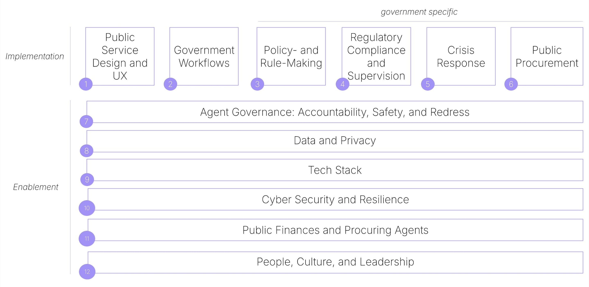

Vision Paper
Launched at the Tallinn Digital Summit 2025, the Vision Paper shows how agentic AI will transform government and defines the contours of the Agentic State.
Executive Summary
AI agents — software that can perceive complex situations, reason through problems, and take autonomous action within defined boundaries — are already operating at commercial scale. Unlike previous waves of digitisation that automated existing processes, these systems can pursue outcomes, adapt through feedback, and coordinate across organisational boundaries.
Governments worldwide have consistently lagged in technology adoption, creating efficiency gaps and mounting citizen frustration. This pattern has left public institutions operating with outdated tools while citizens experience government as slower and less responsive than virtually every other service in their lives. Agentic AI, which is being adopted by industry leaders at unprecedented pace, stands to further widen this gap unless governments up their game.
A Framework for Understanding the Agentic State
We analyse this transformation through twelve functional layers:
- Six implementation layers show where agents can deliver immediate value: public service design that becomes proactive and personalized; government workflows that self-orchestrate; policy-making that adapts continuously based on evidence; regulatory compliance that operates in real-time; crisis response that coordinates at machine speed; and procurement systems that negotiate autonomously within policy constraints.
- Six enablement layers address the structural requirements for successful deployment: governance frameworks for accountability and redress; data management and privacy protection; technical infrastructure spanning interfaces to compute resources; cybersecurity designed for autonomous systems; public finance models that handle variable, outcome-based costs; and organisational cultures capable of human-AI collaboration.
Together, when these twelve layers function in coordination, they create what we call the Agentic State: a comprehensive transformation of public administration where autonomous systems handle complexity and scale while human officials focus on strategic direction, political accountability, and decisions requiring judgment. This represents the most significant shift in how governments operate since the rise of modern bureaucracy.
The shift to the Agentic State represents more than efficiency gains. It enables fundamentally new forms of public administration, where services adjust dynamically to users’ needs, where policies adapt to real-world outcomes, and where government can operate at the speed and scale that modern challenges demand.
However, this transformation also faces substantial obstacles. Traditional bureaucratic structures optimise for procedural compliance rather than achieving outcomes. Accountability mechanisms assume civil servants operating at human speed. Existing technical infrastructure cannot support the real-time, cross-boundary coordination that agents require. Critically, workforce capabilities and organisational cultures must evolve to enable effective human-AI collaboration.
A Call for Deliberate Action
The technical building blocks for the Agentic State exist and are beginning to be proven at commercial scale. Private sector deployments demonstrate that autonomous systems can handle complex workflows, coordinate across organisational boundaries, and operate within defined constraints. Early government implementations show these capabilities translating to public administration contexts, with lower- and middle income countries able to leapfrog more established digital government champions.
Governments that postpone engagement with agentic capabilities face accumulating disadvantages. Citizens and businesses will increasingly deploy their own AI agents while government processes remain manual, creating friction that erodes trust and effectiveness. Private intermediaries will fill service delivery gaps, introducing new dependencies and inequities. Late-moving governments will implement systems designed by others according to commercial priorities rather than public values, losing the opportunity to shape how agentic capabilities serve democratic governance. The window for proactive choice is narrower than many government leaders recognise.
This paper argues for thoughtful experimentation and adoption. The governments that start this work now — acknowledging uncertainty and building incrementally — will develop the knowledge and capacity required for the transformation ahead.
Introduction: The Urgency of Acting Now
Why governments cannot afford to lag behind agentic AI transformation
| TL;DR: Governments cannot afford to wait on agentic AI. Every prior delay in tech adoption has left public institutions weaker, costlier, less trusted and, most of all, less relevant. This time the stakes are higher: agentic systems do not just digitise processes — they can reimagine government itself, enabling more responsive, accountable, and fair services. The imperative now is proactive leadership: governments must act deliberately and with urgency to shape this transformation in the public interest. |
The Cost of Being Late to Technological Progress
For decades, governments worldwide have consistently lagged behind in technology adoption. While enterprises have achieved dramatic productivity gains through cloud computing, data analytics, and agile development practices, most public administrations remain anchored to legacy systems, paper processes, and rigid procurement cycles. This pattern has created substantial efficiency gaps and spurred on mounting citizen frustration, who experience government as slower, less intuitive, and less responsive than virtually every other digital service in their lives.
The human cost has been equally significant. Public servants find themselves constrained by outdated tools that prevent effective service delivery. Talented technologists avoid government careers, creating a vicious cycle of limited digital capacity, while policy makers lack the real-time data and analytical skills and capabilities needed for evidence-based decision making.
Beyond Catch-Up: Agentic AI as Governments’ Chance to Move in Sync with Technology
Unlike previous waves of digitisation that primarily automated routine tasks or improved existing processes, agentic AI systems can perceive complex situations, reason through problems involving judgement and discretion, and take autonomous action to achieve specified outcomes within defined boundaries.
This capability shift proves particularly powerful for core government functions. Public administration involves numerous tasks requiring the processing of large information volumes, application of consistent criteria across thousands of cases, and coordination across multiple departments and stakeholders. AI agents excel at these activities while maintaining complete audit trails and enabling human oversight for complex cases requiring discretionary judgment.
The timing proves optimal for government adoption on multiple fronts. AI technologies have matured sufficiently to handle real-world government complexity whilst costs have decreased enough to enable widespread deployment. Citizens increasingly expect digital service experiences comparable to those they receive from leading private sector organisations, creating public demand for agentic government services. Perhaps most importantly, governments that act now can actively shape the development trajectory of agentic AI to serve public purposes rather than merely adapting to systems designed by others according to commercial priorities.
“The Digital State was our first step. The next is an Agentic State — one that understands people’s needs, offers solutions, and provides the right tools. Ukraine is already moving toward a model where just one request or a single voice message stands between a person’s need and the result. That is what an Agentic State looks like, where technology truly works for people. By realising this vision, Ukraine has already launched Diia.AI, the world’s first national digital agent that provides government services. This is a real step toward a state that operates faster, simpler, and more precisely. AI should become the foundation of public administration, from automating routine processes to delivering personalised services for every citizen. It is about speed, efficiency, and comfort in everyday interaction with the government, because the true purpose of AI is to solve people’s problems.”
- Mykhailo Fedorov, First Vice Prime Minister and Minister of Digital Transformation, Ukraine
The Stakes Are Higher This Time
This transformation differs fundamentally from previous technology adoption cycles in both scale and speed. The acceleration is staggering: the telephone took 75 years to reach 100 million users, the mobile phone 16 years, the internet seven, Facebook under five, TikTok nine months, ChatGPT just two. Agentic AI is arriving not over decades but over months, compressing the timeframe for institutional adaptation.
More critically, agentic AI represents a qualitative leap beyond previous automation waves. Where earlier technologies digitised existing processes, agentic systems can redesign workflows entirely. These technical capabilities enable entirely new forms of public service. Citizens could experience truly proactive government — systems that identify eligibility for benefits before applications are submitted, detect compliance issues before violations occur, and coordinate seamlessly across agencies to deliver integrated life-event services. Businesses could interact with governments through automated compliance reporting that adapts in real-time to regulatory changes whilst reducing administrative burden by orders of magnitude.
Early adopters from private sector organisations demonstrate these capabilities at commercial scale. Financial institutions deploy autonomous agents that process millions of transactions daily, detecting fraud patterns and managing compliance requirements across multiple jurisdictions. Manufacturing companies use intelligent agents to coordinate supply chains, production schedules, and quality control across global operations in real-time. E-commerce platforms deploy customer service agents that handle complex queries, process returns and refunds, and escalate only exceptional cases requiring human intervention.
“In the coming years, assistive AI will be one of the main drivers of economic growth. Public administration and the state must not fall behind. In the future, state services will no longer be something that citizens have to request; they will become an obligation on the state to deliver. Through AI, the state will be able to approach people with precisely the services they need.”
- Florian Tursky, former State Secretary for Digitalisation and Telecommunications, Austria
The Upside
The upside of agentic AI adoption and readiness in government will be a dramatic uplift to public sector performance. Jurisdictions whose public administration embrace agentic AI will have better, faster and more cost-effective government and will also do a better job at governance, offering their citizens and businesses less bureaucracy, faster decision-making, more transparency and accountability and better crisis-management. Finally, they will tilt the field in favor of faster private sector adoption of agentic capabilities, providing an overall uplift to the economy and empowering citizens.
These benefits are not abstract or theoretical — they will express themselves in very concrete measures of public sector performance and service quality, exacerbating the gap that already exists between best performers and laggards in digital government. Leading are already defining new KPIs that raise the bar of what public administration can achieve — faster services, higher satisfaction, and sharp reductions in routine effort. Estonia and Ukraine, for example, have embedded ambitious targets like those shown below into their national plans, signalling a step change in expectations for digital-era governance, presented in the table below.
| Metric | Target Indicator or Change |
|---|---|
| Time to complete most end-user digital services | 1 minute |
| Time to launch new digital services | 1 day |
| User satisfaction with public services | > 90% |
| Reduction in human effort on inter-departmental and public facing correspondence | 90% |
| % of needs resolved without human intervention | 95% of single-interaction requests |
A Call for Proactive Leadership
The deployment of agentic AI will come with inevitable risks and setbacks. Not everything will work. But the alternative — avoiding agentic systems entirely due to complexity or risk concerns — will prove even more costly:
- As private sector AI capabilities advance, governments that cannot provide comparable services risk being seen as obsolete and ineffective. This will further deepen the crisis of legitimacy that the state, challenged with providing public goods, faces in many countries.
- Citizens, businesses, and bad actors will increasingly leverage agentic AI. Where the state does not keep up, those actors will run circles around public administration, using agentic capabilities to achieve their goals.
- When the government fails to provide comprehensive or easy to use services, enterprises will fill the gap and create chargeable service around that, leading to increased cost for citizens and businesses when interacting with the government.
- When laggards do catch up, they will find themselves managing systems designed by others according to priorities that may not align with public purposes.
Government action in preparing for agentic AI should be urgent, not because the technology is perfect or potential future risks are comprehensively understood, but because the cost of delay exceeds the cost of early, thoughtful experimentation.
The choice is clear: lead the transformation or be transformed by it. The window for proactive choice may be narrower than many government leaders recognise. With this initiative, we hope to build towards enabling governments to become proactive.
“The Agentic State makes the stakes crystal clear, and it should be setting the agenda in the US for the bold reforms. It should be required reading for policymakers and advocates in all domains.”
- Jennifer Pahlka, former Deputy Chief Technology Officer, United States
Understanding Agentic AI
AI systems that can perceive, reason, and act can transform how all organisations operate
| TL;DR: Agentic AI combines the ‘brain’ of reasoning systems (LLMs) with the ‘hands’ of automation (RPA), creating software that can perceive, reason, and act with minimal human supervision. Unlike past tech waves that only digitised processes, agents pursue outcomes, adapt through feedback, and collaborate with humans and other agents. Agents exist on a spectrum of autonomy, often working cooperatively, and are already deployed across industries in research, coding, compliance, and customer service. For government, where structured, high-volume tasks dominate, the potential is especially significant: agents can shift public administration from doing things right to doing the right things, delivering faster, more accountable, and outcome-driven services. |
What Are AI Agents? Brain Meets Hands
Generative AI, with its capacity to create novel and human-like content (e.g. text, images, audio, code, or synthetic data), is now ‘eating’ tasks that involve complex cognition, creativity and understanding, such as content creation, communication and software development. In many executive, research and creative roles, generative AI is already seeing widespread adoption.
AI agents take this a step further by introducing systems that can not only generate and analyse data, but also perceive, reason, and act with minimal human intervention. These so-called agentic systems can manage end-to-end processes, learn, self-optimise, and collaborate with humans and other agents.
This distinguishes agents from all previous forms of software. While traditional automation follows a rigid, predefined process, an agent possesses a degree of autonomy. It is defined by its capacity to perceive inputs (telemetry, documents, UI, media), reason and plan a sequence of actions under defined policies, and act through tools and APIs to achieve its objective with minimal human intervention — with the possibility to adapt via feedback, improving over time through their own action. This shift from executing a process to achieving an outcome is the defining characteristic of the agentic paradigm.
To understand what makes this possible, we need to look at how two distinct technological streams have converged: the brain enabling reasoning and planning and the hands enabling action and execution, now combined in a single system.
The Brain Stream: The evolution from IBM's Deep Blue defeating Kasparov in 1997, which lacked broader intelligence, through neural networks and deep learning in the 2010s made feasible AI use for a range of predictive and analytic tasks, including translation and computer vision. Finally, the transformer architecture (2017) enabled Large Language Models like GPT-3 (2020) that could engage in dialogue, solve math problems, and generate code — but remained passive, suggesting actions without executing them.
The Hands Stream: The parallel evolution from simple scripts and macros in the early 2000s to sophisticated Robotic Process Automation (RPA) bots in the 2010s that could mimic human actions: clicking, typing, processing data across systems. Such tools reduced errors and freed workers from mundane tasks — but required deterministic and rule-based programming, lacking judgment.
When these two streams converge, we get an AI agent: a system that can both understand what needs to be done and has the means to actually do it. The agent can perceive its environment (via APIs and interfaces), reason about the query (using the LLM brain), and act by executing tasks through integrations such as MCP, APIs, or RPA tools. The agent paradigm represents the synthesis: understanding the goal, figuring out how to achieve it, and then actually doing it — bridging the gap between intelligence and action that neither GenAI nor RPA could bridge alone.
Levels of Agentic Progression
The term ‘AI agent’ describes a wide spectrum of systems with varying degrees of autonomy. Full autonomy is still the exception in most real systems, which benefit from human checkpoints and explicit guardrails. The useful lens is not a distinction agent vs human but understanding who decides what, with what authority, and how reversibly. Indeed, to better look at agency — and cut through market hype — it is useful to adopt a progression framework that categorizes agents by their capabilities. We use the taxonomy developed by Bornet and coauthors (2025).
In the automotive industry, six levels of driving automation can be identified, from Level 0 (fully manual) to Level 5 (fully autonomous) (SAE). Most vehicles today operate at Level 2 or 3, where automation handles many tasks but still requires human oversight. The same is true for AI agents. While fully autonomous systems capture public attention, the reality is that most agents currently in deployment operate with a human in the loop.
| Level | What Agents Do | Car Analogy | Main Technology | Real-world deployments |
|---|---|---|---|---|
| Level 0 — Manual (Human-only) | Humans perform all tasks; no automation. | Manual driving; no assistance. | Basic digital tools (spreadsheets, email), manual processing. | Paper/email workflows, manual data entry, spreadsheet ops. Production. |
| Level 1 — Rule-based automation | Simple automation follows fixed rules (RPA, scripts). | Basic cruise control maintains speed. | RPA, scripts, rule engines. | Email routing, payment STP, fraud rules engines. Production (ubiquitous). |
| Level 2 — Intelligent process automation | Automation + cognitive capabilities (ML/NLP/CV) with orchestration. | ADAS handles speed & steering with supervision. | ML, NLP, CV, RPA, process orchestration. | AP invoice extraction, claims triage, contact-center assist. Production (common). |
| Level 3 — Agentic workflows | Agents plan, reason, create content, and adapt within defined domains. | Highway auto-nav; human handles edge cases. | LLMs, memory systems, tool use, basic RL. | Copilots (support/coding/marketing), RAG analysts, automated ETL. Production (narrow, supervised) + many pilots. |
| Level 4 — Semi-autonomous agents | Agents act autonomously in bounded expertise; adapt strategies & learn. | Self-driving operates autonomously in specific conditions. | Advanced reasoning & planning, real-time adaptation, causal reasoning. | Driverless taxis, warehouse robotics, inspection drones, AIOps auto-remediation. Limited production in constrained environments; otherwise experimental. |
| Level 5 — Fully autonomous agents | Cross-domain learning and self-adaptation with no humans involved. | Fully autonomous cars drive anywhere in all conditions. | Sophisticated memory systems, advanced learning mechanisms, autonomy safety. | None today; research only. |
It is crucial to understand that higher levels are not always better. The appropriate level of autonomy depends entirely on the specific application's risk profile, complexity, and need for human oversight. There is a critical trade-off: as an agent's autonomy increases, direct human control and the predictability of its actions decrease. For sensitive domains, a highly reliable and auditable Level 3 agent is often preferable to a more autonomous but less predictable Level 4 system.
Cooperative Agents
Agent architectures increasingly rely on multi-agent systems rather than single, monolithic agents. Just as human organisations divide complex work among specialists who collaborate, multi-agent systems distribute tasks across specialized agents — each optimized for specific functions — that coordinate to achieve broader goals.
This division of labor offers several critical advantages. First, it improves reliability: when agents have clearly separated roles (such as planner, executor, and verifier), errors are caught earlier and do not cascade through the entire system. Second, it enables reusability: a document parsing agent built for one workflow can be reused in dozens of others without modification. Third, it reduces development costs dramatically, as teams can compose new capabilities from existing agent components rather than building from scratch.
What AI Agents Are Doing Today
AI agents are no longer just a vision: they are already operating in production across industries. What distinguishes these systems is that they do not just generate content or follow rules — they perceive inputs, reason about what to do next, act through digital tools or interfaces, and learn from outcomes, combining capabilities that used to be separate:
- Perceive: Agents can take in unstructured inputs — documents, interfaces, conversations, or telemetry data. For example, a healthcare scribe listens to a doctor–patient consultation and captures the relevant details for medical records.
- Reason: Using LLMs and other models, agents can plan and decide the next step in a process. Research assistants, for instance, can decompose a complex query into smaller questions, retrieve relevant papers, and propose a structured outline.
- Act: Instead of stopping at recommendations, agents can execute tasks through APIs, RPA, or direct computer control. Travel-booking agents, for example, not only suggest flights but also fill in forms and confirm reservations.
With feedback loops, agents can also refine their performance over time. A coding agent that receives corrections from a developer can improve future outputs and adapt to a project’s style. In practice, they often are set in cooperative workflows, where they interact with other agents and humans, forming small ecosystems rather than working in isolation.
Today’s deployments cluster in domains where tasks are bounded, success is measurable, and guardrails are clear. Most common categories include:
- Research and Analysis: Agents that sift through large volumes of documents, extract insights, and draft structured reports. They accelerate discovery but still rely on human oversight for accuracy.
- Coding and Software Development: Beyond autocomplete, coding agents can plan, write, and test programs, working as junior developers that boost productivity while humans make higher-level design choices.
- Computer Use Agents: Systems that can operate a digital environment directly — navigating forms, clicking through interfaces, and automating workflows even when APIs do not exist.
- Domain Specialists: Narrowly focused agents in areas like legal review, compliance monitoring, healthcare note-taking, IT operations, or logistics optimisation. By tackling well-defined processes, these agents achieve reliability and immediate ROI.
Across these examples, the pattern is clear: agents thrive when they augment human work in specific contexts, delivering speed and consistency while humans provide judgment and oversight. Their role is less about replacing people than about transforming workflows — bridging intelligence with action in ways that previous technologies could not.
Agents in Government: From Doing Things Right to Doing the Right Things
Agents are no longer a laboratory curiosity. In industry, they already run customer service, IT operations, cybersecurity, logistics, and documentation — showing that the technology is real and already delivering results when properly scoped. Governments can expect the comparable benefits that will increase with technological improvements.
Government operations are characterised by specific features that make them particularly well placed to benefit from agentic AI: high-volume, low-complexity tasks that follow structured decision-making frameworks. Processing benefit applications, issuing permits, conducting routine inspections, and managing citizen inquiries all involve similar patterns applied to thousands of cases with measurable outcomes and well-documented procedures. This creates ideal conditions for AI efficiency gains whilst maintaining quality and accountability.
Previous waves of automation focused on ‘doing things right’ — digitising existing processes to execute established procedures more efficiently. Agentic AI enables governments to focus on ‘doing the right things’ — defining desired outcomes and allowing intelligent systems to determine optimal approaches within defined constraints.
Many governments have developed overly process-driven cultures that prioritise procedural compliance over outcome achievement. Agentic AI inverts this relationship: rather than specifying every step in a workflow, governments can specify objectives, constraints, and success criteria, then allow agents to optimise approaches based on real-world feedback and learning. Adopting a culture of continuous improvement will also be needed to take advantage of these capabilities.
The prize is not automation for its own sake, but better services and outcomes with stronger accountability than many human-only processes offer today.
“Agentic AI is the next frontier of government digitisation and modernisation — ultimately redefining the relationship between the state, citizens, and organisations. The UAE government will approach this with the same ambition and vision we brought to previous waves of transformation. We are eager to advance this agenda and contribute to the international exchange that will help all governments navigate this transformation successfully.”
- H.E. Mohamed Bin Taliah, Chief of Government Services, United Arab Emirates
The Agentic State: Our Thinking and Approach
A framework for understanding how government transforms through agentic AI across a set of functional layers
| TL;DR: The Agentic State will transform government across all its activities. We analyse this transformation through 12 layers: implementation layers show where agents can deliver immediate, visible value to citizens, businesses, and government operations, while enablement layers address the broader structural requirements that must function effectively for agentic applications to be successfully deployed whilst preserving political accountability and public trust. Together, they mark the most significant shift in public administration since the rise of bureaucracy — moving from rule-based procedures to outcome-driven governance. |
Defining the Agentic State
The Agentic State represents a fundamental reimagining of how government operates. It is not just a matter of deploying individual AI agents within existing structures; it means a comprehensive transformation of public administration itself.
In the Agentic State, human judgement and activity is enhanced by agentic systems that can completely handle the complexity and scale of traditional bureaucratic processes. This frees up human officials to focus more on the strategic, political, and creative aspects of governance which require distinctly human capabilities.
Agentic AI can go far beyond the automation of existing processes compared to previous technology trends, and therefore enables entirely new forms of public administration. Where traditional systems follow predetermined rules and break down at edge cases, agentic systems can reason through ambiguity, learn from results, and operate with genuine autonomy within their assigned scope. This allows for a shift from process-driven bureaucracy towards outcome-driven organisation and represents the most significant transformation in public administration since the introduction of modern bureaucracy itself.
The Agentic State is not a distant or utopian future vision but an immediate strategic imperative. The technologies required are already commercially available and become increasingly proven at scale.
A Multi-Layer Framework: From Direct Applications to Foundational Requirements
Our thinking on the Agentic State is structured around multiple functional layers, driven by the recognition that whilst agentic applications are clearly valuable, far more must work properly for the Agentic State to take shape successfully.

We broadly divide the functional layers into those adding towards the application of agentic AI, and those that enable this:
Implementation Layers (1–6) represent where agentic capabilities deliver immediate, visible value to citizens, businesses, and government operations. These include public service design and user experience that citizens directly encounter, government workflows that improve administrative efficiency, policy- and rule-making processes that enhance decision quality, regulatory compliance and supervision that ensures oversight at scale, crisis response capabilities that enable rapid coordinated action, and procurement systems that transform how governments acquire goods and services.
Enablement Layers (7–12) address the broader structural requirements that must function effectively for agentic applications to be successfully deployed whilst preserving political accountability and public trust. These enablement conditions span agent governance frameworks for accountability and redress, data management and privacy protection, technical infrastructure, cybersecurity and resilience measures, public finance and procuring of agents, as well as organisational culture and leadership transformation.
Together, these layers in their totality create what we understand as the Agentic State. The framework can be read both horizontally and vertically. Horizontally, the application layers reveal where agentic AI can be deployed to transform government workflows and deliver value for citizens and businesses. Vertically, it becomes evident that any deployment of agents within an application layer requires careful alignment across all enablement layers, meaning that successful transformation demands coordinated progress across the entire system rather than isolated deployments.
“The idea of the Agentic State gives us a holistic view of what the capabilities AI agents connected to government services can provide. It also gives us a framework on how to approach the once again very complex problem of providing government services by applying digital possibilities. LLMs in combination with AI agent architecture have strong potential to improve digital inclusion which still remains a big challenge to many nations.”
- Jarkko Levasma, Government Chief Information Officer, Director General, Ministry of Finance, Finland
Naturally, progress across all layers towards the Agentic State will not always happen simultaneously nor at the same pace — particularly given the varying organisational capacity, political priorities, and technical readiness across different country contexts. Yet moving towards the Agentic State will require substantial strategic coordination across all layers, and this holistic framework serves to clarify how individual efforts contribute to the broader transformation and where each initiative fits within the overall architecture.
The subsequent chapters provide detailed analysis of each layer, examining current challenges, transformation opportunities, and implementation pathways specific to that domain.
A Shift in Governance
Beyond transformation in specific layers, the Agentic State will also bring along with it a more general shift in the dynamic of how government works, with inevitable friction between the status quo and new operational models enabled by AI agents. Some of these points of friction will include:
Rule-Based Decision Making vs. Outcome Optimisation: Bureaucracy applies predetermined rules to specific situations. Agentic systems optimise toward defined outcomes within constraint boundaries, potentially discovering approaches that no human rule-writer anticipated. When an agentic system finds a more effective way to achieve policy goals, bureaucratic rule-compliance can prevent adoption of superior approaches.
Hierarchical Authority vs. Network Coordination: Agentic systems operate through networks of specialised agents coordinating across organisational boundaries. Traditional hierarchies cannot provide the real-time oversight and coordination these systems require. A tax compliance agent might need to interact with agents from regulatory agencies, financial institutions, and international organisations — outside traditional bureaucratic chains of command.
Specialised Roles vs. Adaptive Capabilities: Functional specialisation of government bodies creates deep expertise within narrow domains but struggles with cross-cutting challenges. Agentic systems can dynamically reconfigure their capabilities based on task requirements, potentially making rigid role specialisation a barrier to effective human-AI collaboration.
Periodic Planning and Decision-Making vs. Continuous Learning and Iteration: Traditional bureaucracy rewards accumulated experience within established procedures. Agentic systems require human partners who can adapt continuously, learn new technical skills, and be comfortable with emergent rather than precedent-based decision-making.
Most fundamentally, traditional notions of good governance optimise for consistency and predictability rather than effectiveness and adaptation. This creates public administrations that can explain why they followed proper procedures even when those procedures produced poor outcomes. Agentic systems, by contrast, optimise directly for outcomes within defined constraints.
“While the future paradigm promises hyper-personalised services delivered at near-zero marginal cost, back-office workflows where bureaucracy ‘melts away’, and the capacity for ‘living laws’ that adapt in real-time to achieve policy targets, it requires a deep and deliberate investment in the foundations outlined in this report. A government that cannot holistically measure public value will be unable to define outcome-driven objectives for its AI agents. A government that lacks robust, trust-building governance will not have the public license to deploy autonomous systems. A government that cannot manage socio-technical risk will be unable to ensure these systems are safe and fair. And a government without common technical standards and an enterprise architecture will be incapable of orchestrating the complex, interconnected systems that define the Agentic State. Therefore, the adoption of this integrated framework is a necessary and urgent strategic step.”
- Chris Fechner, Chief Executive Officer, Digital Transformation Agency, Australia
1. Public Service Design and User Experience
From fragmented portals to proactive, personalised, and self-composing public services
| TL;DR: Agentic AI will transform public service design from fragmented portals into proactive, personalised, and self-composing services that flow seamlessly around citizens’ lives. Agents orchestrate complex needs across departments, anticipate issues before they arise, and adapt interactions across channels and contexts. The prize is a shift from bureaucratic transactions to outcome-driven, people-centred government — while the cost of inaction is growing frustration, inequality, and dependence on private intermediaries. |
Where We Are Now
The Agentic State represents a fundamental change from where citizens and businesses experience government as a collection of separate departments, each requiring different forms, credentials, and processes. The user experience (UX) remains transactional and brittle. Standard cases follow rigid workflows, while anything outside the norm results in manual handling and bureaucratic back-and-forth.
Even governments leading in public service design have digitised this fragmentation rather than eliminating it. Interfaces are smooth and the queues are digital, but users still bear the burden of understanding which department does what and managing interactions across organisational boundaries. While citizens expect to deal with a single front door for government, the reality is services that remain largely fragmented across departments, forcing people to repeat information and navigate silos.
Increasingly, efforts to design user-centric life events have become part of the standard digital government playbook. This approach organises public services around key moments in people's lives: having a child, starting a business, or retiring. While effective for capturing broad, predictable stages of life, the life events model misses the granular, messy, and often urgent needs and edge cases that define real user journeys. And the technical and coordination costs to manually (re)design life event services are significant, preventing this approach from scaling to all users and situations.
“Citizens do not distinguish between public and private digital experiences — they simply expect every interaction to be intuitive, fast, and genuinely helpful, whether they are ordering food, managing finances, or applying for permits. Government leaders may find the word ‘sexy’ uncomfortable when describing public services, but the truth is that government products are competing directly with commercial applications for citizens' attention, time, and trust — and losing badly when they prioritise compliance over usability, process over outcomes, or institutional convenience over user needs. The brand of government services is not a logo or color scheme. Government design carries special responsibility because these products do not just serve individual users; they influence social cohesion, democratic participation, and public trust in institutions, making design strategy a continuous process that must evolve with society's changing needs and cultural contexts while leaving lasting positive impact in citizens' real lives, not just digital experiences.”
- Valeriya Ionan, Advisor to the First Vice Prime Minister of Ukraine, Former Deputy Minister of Digital Transformation, Ukraine
Agentic Public Service Design and UX
In the Agentic State, public services flow directly around people’s lives, with service design occurring as a constant, dynamic process. At the core of agentic public services is an agent acting on behalf of the user, weaving interactions into daily life without requiring deliberate effort: Needs are anticipated before they are spoken, solutions assemble themselves across departments, and interactions adapt instantly to context — whether through voice, text, or emerging interfaces. Services become continuous, personalised, and seamless, transforming government from a distant bureaucracy into an active presence that works with citizens rather than waiting for them.
This new mode of public service design and UX rests on four defining characteristics:
Hyper-Personalisation: Agentic interactions adapt automatically to individual circumstances, capabilities, and preferences. A recent graduate gets different tax guidance than a serial entrepreneur. New parents receive different benefit information than those caring for elderly relatives. Context drives customisation: the same services morph based on user needs. This characteristic is reinforced by the possibility of accessing services through personal agents that act as interfaces and orchestrators between users and services.
Self-Composition: Complete solutions assemble dynamically from distributed services. A citizen asking for ‘help after house damage’ triggers a coordinated response across insurance verification, emergency housing, building permits, contractor certification, utility restoration. Citizens state intent once; agents orchestrate everything else invisibly and handle bureaucratic complexity in the background.
Anticipation: Services detect needs and identify opportunities before citizens recognise them. If a family's income drops below assistance thresholds; relevant programmes contact them directly with pre-filled applications (and explain how and why the user was contacted proactively).
Multimodality and Omnichannel: Citizens access government anywhere, anyhow. Voice conversations for the visually impaired, chat interfaces for digital natives, AR overlays for spatial information. Start on the phone, continue on the laptop, finish through voice commands with full continuity and maintain context between different channels. Public services weave into other user journeys, for example visa applications during trip booking.
Evidence from Real-World Deployments
L1–L2 — Government Foundations. Many governments already have the building blocks for agentic public service design in place. The UK's GOV.UK Notify provides infrastructure for proactive communications. Singapore's SingPass creates authentication foundations for personalised services. These represent L1–L2 capabilities — structured automation ready for agentic enhancement.
L3–L4 — Private Sector Deployment. Agentic service delivery already operates at commercial scale, demonstrating technical feasibility:
- Salesforce Agentforce orchestrates complete customer service resolution across multiple systems, escalating only complex exceptions whilst maintaining full audit trails. At Heathrow Airport, Hallie achieves 90% chat resolution without human transfer, adapting responses to passenger contexts and coordinating across airport systems in real-time — classic L3 agentic interaction capability.
- Banking sector anticipation shows sophisticated capabilities. Leading banks deploy agents that detect unusual spending patterns, proactively contact customers about potential fraud, and automatically coordinate card replacement, transaction disputes, and merchant communications whilst adapting communication style to customer preferences and urgency levels — L4 semi-autonomous operation within financial regulatory constraints.
- Healthcare platform composition demonstrates complex service assembly. Patient apps like those deployed by Kaiser Permanente orchestrate appointment scheduling, prescription management, specialist referrals, and insurance coordination based on individual health profiles and treatment plans. The system adapts pathways based on patient responses and clinical outcomes without requiring patients to understand healthcare bureaucracy — L3–L4 service composition in highly regulated environments.
A few jurisdictions have begun to offer agentic interactions and services to users:
- Diia.AI. Ukraine is piloting a national AI-agent inside its government portal that executes services end-to-end directly in chat. The intent is to shift from forms to outcomes — users describe a need and the agent completes the workflow, with more services added over time. digitalstate.gov.ua
- TAMM 3.0. Abu Dhabi’s latest release of its government app TAMM adds an AI assistant with conversational voice in Arabic and English, personalising and orchestrating access to a one-stop shop of 800+ services.
Implementation Dynamics
Several dynamics will drive implementation of agentic service delivery that will distinguish government transformation from other domains. We believe the following dynamics will be key:
Citizen Contact Ownership: Government services embedding in private platforms creates a fundamental choice about citizen relationships. When visa applications happen during trip booking, citizens may interact through private intermediaries rather than directly with governments. This is fundamentally about whether governments become an underlying service infrastructure for all services or remain a separate service provider. This requires conscious decisions about maintaining direct citizen relationships versus enabling seamless third-party integration. Governments must strike a balance between visibility and control on the one side and user convenience on the other.
User Preference for Level of Agentic Interaction: Service personalisation will evolve into agent personalisation, whereby the user chooses which agents support them to what extent and controls what services can be provided by which agents. Preferences for service delivery and freedom to choose the degree of agentic service provision become an important choice for citizens.
Back-Office Integration Requirements: Agentic UX requires a complete transformation of internal workflows. Self-composing services cannot operate on fragmented internal workflows or siloed data systems. When agents orchestrate ‘help after house damage’ across insurance, housing, permits, and utilities, every internal process — eligibility verification, approval workflows, payment systems, inter-agency coordination — must be redesigned for machine-speed coordination. Otherwise, agentic interfaces become shallow facades that break down when citizens need actual service delivery.
Transparency and Explainability: Government agents must operate with complete transparency where private sector applications tolerate opacity. Citizens need to understand not just decisions but reasoning, alternatives considered, and appeal processes. This requires structured explanations, complete decision logs, and clear escalation paths — legal requirements for due process that go beyond technical functionality. Governments may need to legislate to permit proactive outreach for specific services where the user has not explicitly given consent (e.g. to deliver benefits to vulnerable and underserved populations).
Platform and Market-Making Role: Government’s biggest contribution to agentic UX may lie not in developing its own agents but enabling users to ‘bring their own agent’, using personal AI assistants developed by private sector providers. The work needed for governments to act as platforms in this scenario is no less voluminous, including the provision of APIs, standards for quality, security and privacy, assurance and redress (see layers 7, 8, and 9). And governments will likely need to support developers with specialised interfaces for specific communities — disability services, compliance tools, immigrant applications.
Universal Access Obligations: Private companies optimise for profitable customers; governments must serve everyone. This demands channel parity across interfaces, multilingual capability beyond translation, accessibility beyond compliance, and digital inclusion pathways for those lacking devices or skills.
“Serving both California, the world’s fourth largest economy, and Montenegro, a country of half a million people, taught me that scale does not change the fundamental challenges governments face: calcified processes, limited capacity, and the urgent need for thoughtful leadership. Technology and AI are powerful tools, but they are not solutions on their own. Real change begins with a deep understanding of human problems, not the temptation to ‘sprinkle AI’ on broken systems. When you have a hammer, everything looks like a nail; and we need to be cautious not to treat AI as a hammer. The real test of AI is not how advanced it appears, but whether it improves lives in practice and reflects the needs of the people it is meant to serve. Done well, agentic AI can strengthen democracy by helping governments reflect plural values, make better decisions, and build systems that serve everyone, not just the privileged few.”
- Tamara Srzentić, former Minister of Public Administration, Digital Society and Media, Montenegro and former Deputy Director and Lead, California Office of Innovation and Pandemic Digital Response, United States
Cost of Inaction
Governments that fail to transform service delivery face accelerating citizen frustration as private services become increasingly intelligent whereas government remains fragmented and slow. The expectation gap erodes trust and political legitimacy.
Without agentic transformation, digital divides widen. Sophisticated citizens and businesses navigate complex systems effectively while vulnerable populations fall further behind, creating two-tier service delivery that contradicts equal treatment principles.
Most critically, private intermediaries fill the orchestration gap. Citizens increasingly rely on third-party platforms to navigate government complexity, creating dependencies that compromise equity, privacy, and control over public services.
Questions That Will Matter in the Future
- How can governments design self-composing services that work seamlessly across traditional agency boundaries while preserving accountability and political oversight? What institutional reforms enable service orchestration without undermining the checks and balances that prevent abuse of government power?
- Should governments provide universal baseline agents to ensure equitable access to agentic services, or can market-based approaches deliver adequate public benefit? What governance frameworks prevent agentic service delivery from creating new forms of digital inequality based on agent quality or sophistication?
- Who is liable in a situation where a citizen misses important legal obligations because of miscommunications or omission of information by an AI agent? What legal status does an agent acting on behalf of an individual carry: does the agent represent the individual or is a facsimile of the individual?
- How do we balance proactive government service with citizen privacy and autonomy? What safeguards prevent helpful anticipation of citizen needs from becoming intrusive surveillance or paternalistic decision-making that undermines individual agency?
- What constitutes appropriate transparency and explainability when AI agents make decisions affecting citizen services? How can government agents provide clear reasoning for their actions while operating at the speed and scale that makes agentic service delivery valuable?
- How do we measure success in agentic service delivery beyond traditional metrics of speed and efficiency? What performance frameworks capture improvements in citizen outcomes, equity, and political values alongside operational gains?
2. Government Workflows
From manual bottlenecks to self-orchestrating government operations
| TL;DR: Government workflows are the state’s operating system, yet today they remain digitised paper trails riddled with bottlenecks. Agentic AI transforms them into self-orchestrating, outcome-driven operations: agents integrate across departments, allocate resources intelligently, and continuously optimise processes in real time. The result is faster, more accurate, and more transparent government action, freeing civil servants to focus on judgment and oversight. The cost of inaction is severe: outdated workflows hard-code delay and inefficiency into everything the state does, leaving governments unable to govern effectively. |
Where We Are Now
Every government runs on workflows — the structured sequences of tasks that move information, apply rules, and generate decisions. These processes are the machinery that transforms political intent into administrative reality. Though largely invisible to citizens, workflows absorb the majority of governments’ time, budget, and staff capacity. They determine whether a benefits application takes weeks or months, whether a business license requires three forms or thirty, whether agencies coordinate seamlessly or work at cross-purposes. In short, workflows are what make governments function (and are frequently the source of dysfunction).
Currently, most government workflows operate as digitised versions of paper processes rather than being redesigned for digital capabilities. Information moves through email chains that replicate postal correspondence. Digital forms mirror paper layouts, requiring manual data entry even when information already exists in government databases. Approvals follow hierarchical chains designed for physical signatures. Even where processes are automated, users end up providing identical information to multiple agencies because systems cannot communicate despite operating on the same network. Processing times stretch for weeks not because work is complex, but because it waits in digital queues for human attention that adds no genuine value. The result is expensive inefficiency disguised as digital modernisation — technology deployed to accelerate old processes rather than enable new possibilities.
Agentic Government Workflows
Workflows in the old model optimise for doing things right: rigid steps, box-ticking, and procedural compliance. Agentic workflows optimise for doing the right things: delivering outcomes aligned with policy intent. In the Agentic State, agents dynamically assemble and execute workflows in real-time, drawing from across departments, data sources, and rule systems to create optimal pathways for each specific case — rather than forcing every case through the same rigid sequence. The promise is compelling: speed and precision without brittleness.
Four characteristics define this shift:
Outcome-Driven Orchestration: Agents align workflows with policy intent, dynamically sequencing tasks to achieve targets such as faster approvals, higher accuracy, or tighter compliance. A permit agent might be tasked with approving 90% of construction applications within ten days while rigorously enforcing zoning and climate standards. It verifies documents, checks rules, and issues draft permits — reconfiguring its approach as needed to stay on pace without compromising standards.
Intelligent Resource Allocation: High-volume, low-complexity cases are handled end-to-end by agents, freeing human expertise for complex or sensitive judgments. Routine approvals skip managerial layers; exceptional cases route directly to specialists; urgent matters leapfrog queues. Human capacity is no longer wasted on repetition but concentrated where discretion, negotiation, or creativity are essential.
Cross-System Integration Without Handoffs: Agents cut through silos by linking systems, agencies, and jurisdictions into seamless flows. A single business licence application triggers identity verification, budget checks, and registry updates across departments — all instantly, without clerical transfers. A citizen’s address change cascades automatically to tax, benefits, and voter rolls, eliminating today’s fragmented and error-prone handoffs.
Continuous Process Optimisation: Every workflow run becomes a feedback loop. Agents benchmark performance against defined goals — turnaround times, error rates, compliance accuracy — and adjust their methods in real time. Optimisation compounds rapidly: agents spot bottlenecks, collapse redundant steps, and refine sequencing across thousands of near-identical cases, driving down costs and delays. In low-volume, high-complexity workflows, learning focuses on surfacing better decision support: identifying which cases deserve escalation, what contextual data improves judgment, and how explanations can be made clearer. Across both types, processes do not remain static; they continuously evolve, so the more government works, the better and faster it becomes.
“The State of Goiás has been implementing AI agents across several administrative sectors, with a particular focus on digital document analysis and evaluation processes. These applications have achieved significant efficiency gains, optimising workflows and reducing the need for direct human intervention at various operational stages.”
- Adriano da Rocha Lima, General Secretary of Government, State of Goiás, Brazil
Evidence from Real-World Deployments
L1 — Digitised and Assisted Workflows (rules-based, human-led). The best digitized administrations mostly operate at this level (with many still stuck at L0). Systems execute predefined scripts: matching invoices to purchase orders by comparing reference numbers, routing benefit applications to appropriate departments based on category codes, generating standard HR checklists when new employees are hired. Forms move electronically rather than on paper, but non-deterministic steps require human approval.
L2 — AI-Assisted Classification and Routing (human-in-the-loop). Common in most newer ERP software. Machine learning systems analyse incoming documents, extract relevant data fields, and assign priority scores or risk categories. Tax and accounting systems automatically populate forms using previous year's data; inspection agencies rank facilities by risk algorithms; HR systems parse CVs and score candidates against job requirements. Humans review these machine-generated recommendations and make final decisions on every case.
In the state of Goiás, Brazil, agentic systems are being used to optimise several backend processes. In just one of these processes — the review of new innovative projects submitted for financing — the AI agent has already cut the average analysis time from one year to a single week, and reduced the required staffing by 33 people.
L3 — Agent-Assisted Orchestration (end-to-end flows under supervision). Agents coordinate multiple systems to execute complete processes, escalating only when predetermined thresholds are exceeded.
- Klarna: An AI system processed 2.3 million customer conversations monthly, resolving issues that previously required human agents. When customer satisfaction declined, the company reintroduced human agents for complex cases while maintaining AI for routine inquiries.
- Adecco: Automated systems screen 300 million job applications annually, conduct initial candidate conversations (57% occurring outside business hours), and create shortlists for human recruiters to review.
Government applications at L3 execute complete workflows: permit systems that sequence checks across multiple departments, validate requirements, and generate approval documents; benefit systems that gather evidence from multiple databases, calculate entitlements, and produce decisions with explanations.
L4 — Semi-Autonomous Operations (bounded autonomy with guardrails). Systems operate independently within predefined parameters and automatically stop when limits are reached.
- Amazon's procurement systems autonomously manage the purchasing process for standard supplies — identifying needs, selecting vendors, placing orders, and reconciling invoices — within preset spending limits per category, vendor, and time period. Human intervention is required only for exceptions or complex cases when thresholds are exceeded.
- Google's network traffic management automatically reroutes data flows during outages or congestion, reallocates server capacity based on demand, and scales resources up or down within predetermined cost and performance boundaries — all without human intervention unless system-wide parameters are breached.
- Singapore's smart traffic management will soon adjust signal timing, toll pricing, and lane configurations in real time based on traffic flows, automatically optimising for citywide throughput while respecting maximum toll rates and minimum service levels set by transport authorities.
“Improving government workflows is a primary objective, and must be addressed sector by sector. In Italy, we are trying to build concrete applications to enable the changes, including legislative and regulatory ones, needed to achieve a real impact on public services. In the healthcare sector, a priority is optimising waiting lists for diagnostic tests such as CT scans, X-ray scans, etc. To avoid no-shows, we are trying to integrate agents who, by monitoring habits, traffic, and weather conditions, can ensure that healthcare officials can use overbooking options or manage situations outside the healthcare sector (transportation, accessibility), thus helping citizens achieve the real goal: executing the CT scan! With these agents fully under human control, we are addressing challenges regarding their scope of competence, regulations on procedural responsibility, and privacy, transparency, and accountability tools.”
- Mario Nobile, Director General, Agency for Digital Italy
Implementation Dynamics
Transforming internal workflows into agentic systems is a technological, institutional, and organisational challenge. Several dynamics will determine whether agentic workflows deliver efficiency or stall in partial adoption:
Efficiency as a Political Mandate: Workflow reform has long been framed as ‘back-office modernisation,’ a secondary priority compared to frontline service delivery. In an Agentic State, this logic shifts. Without transforming workflows, efficiency gains elsewhere remain capped. Governments must treat workflow optimisation as a political priority — measured, funded, and mandated explicitly — if they are to unlock capacity for everything else.
The Performance Measurement Shift: Traditional workflow metrics focus on activity rather than outcomes — applications processed, meetings held, documents reviewed. Agentic systems enable extending beyond output metrics to measure what actually matters: problems solved, citizen satisfaction, time from need identification to resolution, cost per successful outcome. Managing this transition requires new metrics, new incentive structures, and political commitment to accountability for results rather than process compliance.
Redefining Roles for Civil Servants: As agents absorb high-volume, low-complexity tasks, the work of public officials shifts to supervision, exception handling, and cross-system coordination. This demands retraining, new performance evaluations, and recognition of supervisory judgment as central to public value creation. Without deliberate workforce design, efficiency gains may coexist with staff alienation and institutional resistance.
Management of Integration Complexity: Government workflows cross organisational, legal, and technical boundaries that resist simple integration. A comprehensive case management system must coordinate with separate budget systems, legal databases, external vendor platforms, and citizen-facing services — each with different data formats, security requirements, and operational constraints. Success requires standardised interfaces and protocols that enable interoperability without forcing wholesale replacement of existing systems.
Cost of Inaction
If workflows do not change, nothing changes. They are the state’s operating system — every decision, every payment, every approval runs through them. Outdated workflows hard-code delay into everything the government tries to do. Policy ambitions collapse into bottlenecks, and capacity is wasted on moving paper instead of solving problems.
The efficiency gains here are not marginal; they are existential. Transforming workflows unlocks speed, accuracy, and scale across the entire machinery of government as well as better citizen outcomes. Refusing to modernise means condemning public servants to clerical drudgery, citizens to frustration, and institutions to permanent incapacity. Governments that fail to act will not merely be inefficient — they will be unable to govern.
Questions That Will Matter in the Future
- How should governments measure success when workflows optimise for outcomes rather than steps? Can performance metrics capture improvements in citizen experience, service quality, and policy results alongside efficiency gains?
- How do agentic workflows avoid reinforcing bias in how cases are routed, prioritised, or resolved? What safeguards guarantee due process and accountability when decisions are made at machine speed? How can citizens have a right to challenge workflow outcomes in ways that are understandable and accessible? What safeguards ensure that agentic services do not unintentionally exclude or misrepresent marginalized groups due to biased data or limited digital access?
- When workflows span multiple agencies or jurisdictions, who resolves conflicts between competing priorities or legal requirements? How can integration reduce bureaucratic friction without undermining the checks and balances meant to prevent abuse of power, and do we need new inter-agency governance structures to oversee cross-boundary workflows?
- How can public servants transition from clerical processing to oversight and coordination without losing morale or institutional knowledge? What training and career pathways will prepare civil servants for supervising and improving agentic systems, and how do governments preserve service continuity during the shift?
3. Policy- and Rule-Making
From episodic to continuous, evidence-based regulation that adapts to real-world outcomes
| TL;DR: In the Agentic State, governments move from episodic regulation to continuous, evidence-based regulation that adapts in real time. Agents simulate policy before adoption, encode rules as machine-readable logic, refine parameters dynamically, and integrate continuous citizen and business feedback. This enables regulation that is more adaptive, transparent, and effective — while still preserving political oversight. The cost of inaction is growing gaps between law and life, with rules that are outdated on arrival, arbitrage by private actors, and eroding trust in governments’ ability to govern. |
Where We Are Now
Modern policy- and regulatory rule-making today operate on slow, reactive cycles. Policy-making, the high-level goal-setting typically done through legislation, sets broad aims such as ensuring fair competition, reducing emissions, or guaranteeing access to healthcare. Regulatory rule-making, the detailed implementation work of agencies, translates those aims into thresholds, formulas, procedures, and compliance requirements. Both involve creating or modifying rules that apply to everyone within their scope.
Both policy- and regulatory rule-making are intentionally deliberative and procedural. Drafts are circulated, debated, and amended. Consultations are held with stakeholders. Decisions are published and then locked in place for years, sometimes decades. Updating them usually requires reopening a full legislative or regulatory process — costly, time-consuming exercises that create a strong bias toward stability and against adaptability.
This rigidity ensures predictability and consistency but also produces critical mismatches. Benefits formulas and tax codes lag behind economic realities. Environmental thresholds fail to reflect the latest scientific data. Consumer protection rules can trail technological change by entire product cycles. Even when adjustments are made, they are based on retrospective data, political compromise, or expert judgment — rarely on real-time evidence.
The result is a gap between the speed of law and the speed of life. Citizens and businesses experience uncertainty and inconsistency: eligibility criteria that do not reflect current circumstances, compliance requirements that change too late, enforcement that comes only after harm is done. Meanwhile, global markets, supply chains, and adversaries adapt continuously. Governments remain locked in deliberative tempos that cannot keep pace.
Agentic Policy- and Rule-Making
In the Agentic State, policy no longer freezes intentions into rules that age badly. AI agents continuously translate policy goals into adaptive, real-time regulations. Legislative bodies set the ‘what’ — the outcomes society wants, such as cleaner air, fairer markets, safer workplaces — informed by the best available evidence and AI-driven analysis. Agentic systems optimise the ‘how’: proposing optimal regulations as new data comes in, stress-testing rules against live scenarios, and publishing transparent rationales for each adjustment.
Four key characteristics will enable this:
Dynamic Policy Simulation: Before enacting new policies, agents test them across synthetic populations and digital twins of social systems. These simulations stress-test distributional effects, identify unintended consequences, and reveal edge cases that human analysis might miss. Like flight simulators for regulation, they allow governments to crash-test policies safely before deployment, running thousands of scenarios to understand how rules perform under different conditions — from economic shocks to demographic shifts to adversarial exploitation.
Machine-Readable Law: Instead of ambiguous text that requires interpretation, laws are also encoded as formal, executable logic alongside their traditional prose versions (with a clear hierarchy of which version prevails in case of conflicting content). Eligibility thresholds, benefit formulas, tax calculations, and regulatory requirements become precise specifications that agents can apply consistently. At the same time, agents expand what is possible by interpreting regulation directly in natural language. The likely future is a spectrum: some rules (especially those that apply to physical persons) remain prose-only, others are enriched with structured tags and metadata to aid machine comprehension, and critical formulas or thresholds are expressed as executable code that eliminates ambiguity in routine cases.
Adaptive Rule Refinement: Agents continuously monitor how rules perform in practice, tracking compliance rates, citizen outcomes, equity metrics, and systemic impacts. When policies drift from intended effects or conditions change, agents propose adjustments within predefined boundaries — updating inflation-indexed thresholds, rebalancing regulatory parameters, or flagging issues requiring human review. Micro-updates keep regulations aligned with reality while major changes remain subject to institutional deliberation, creating a clear distinction between technical parameter adjustment and fundamental policy revision.
Participatory Intelligence: Rather than episodic consultations, continuous feedback streams inform policy refinement. Agents aggregate signals from citizen appeals, business friction reports, implementation data, and expert input, synthesising patterns that reveal when rules create unintended barriers or miss their targets. This transforms policy-making from periodic snapshots into continuous learning systems that improve through use, while maintaining democratic legitimacy through transparent reasoning and clear escalation paths for contested decisions.
“AI agents will streamline bureaucracy and transform the citizen experience by enabling truly proactive public services. Imagine the shift from repetitive form-filling to having a personal, AI-powered government concierge that anticipates your life events, provides relevant information and options, and carries out administrative tasks on your behalf. Furthermore, AI agents will increasingly combine generative and predictive capabilities, enhancing strategic decision-making in the public sector. They will enable governments to plan and manage infrastructure projects more efficiently through highly accurate forecasts of traffic, weather, and demographic trends, while also optimising healthcare systems by anticipating the future medical needs of the population.”
- Mark Boris Andrijanič, former Minister for Digital Transformation, Slovenia
Evidence from Real-World Deployments
L1–L2 — Foundations in Government: Several governments are experimenting with policy-as-code and machine-readable regulation. New Zealand’s Better Rules initiative has shown how legislation can be expressed in executable formats, allowing eligibility formulas and benefit rules to be tested before enactment. Financial regulators in the UK, Singapore, and elsewhere are piloting systems that publish regulations both as legal text and as structured logic that can be consumed by compliance software. OECD governments also increasingly use AI tools to draft regulations, analyse thousands of public consultation responses, and forecast likely impacts. These capabilities provide richer inputs and faster drafting, but final decisions remain fully human-led.
L3 — Continuous Adaptation in Practice: The private sector demonstrates that dynamic adjustment of rules at machine speed is already possible. Content moderation platforms continuously update enforcement thresholds and detection models, responding to emerging harms, appeals, and contextual factors. While controversial, these systems prove that algorithmically mediated policy adjustment can operate at global scale. In financial services, regulatory technology tools automatically interpret complex obligations across jurisdictions, update internal rules when regulations change, and provide real-time compliance guidance. Here, agents manage complete workflows under human supervision, showing how policy execution can be made adaptive without losing accountability.
L4 — Bounded Autonomy in Critical Systems: Unlike other domains where bounded autonomy is already visible, we could not identify mature L4 deployments in policy or rule-making. This absence could be telling: rule-making is a foundational activity where delegation to agents is more challenging, and where even small technical adjustments can have wide distributive consequences. Higher autonomy in this field may require shifts not only in AI capabilities but in institutional design which organisations have not explored yet.
Implementation Dynamics
Transforming policy-making from static to adaptive creates tensions that no amount of technical sophistication can eliminate. Governments must navigate fundamental questions between speed and deliberation, optimisation and politics, sovereignty and coordination. Agentic policy-making is likely to begin with technical rule-making that can be more readily changed without the intervention of the legislature.
How this plays out is dependent on the following dynamics:
Delegation and Oversight: Agentic policy systems force an uncomfortable question: which decisions can agents make autonomously, and which require human and political authority? The instinct is to draw bright lines: agents adjust technical parameters (inflation indexing), humans decide substantive questions (eligibility rules). But this distinction collapses under scrutiny. Inflation adjustments can shift millions in or out of benefit programs. Threshold tweaks can redefine market structure.
The real challenge is designing delegation frameworks that specify not just what agents can change, but under what conditions, with what monitoring, and with what triggers for human review. Unlike private platforms that can adjust policies unilaterally, government rulemaking must maintain political accountability even at machine speed. This requires new oversight mechanisms. Success means treating delegation as dynamic risk-management rather than static legal classification.
Simulation and Validation: Digital twins and policy simulators promise to reveal consequences before implementation. But simulations are only as good as their models, and all models embed assumptions about how societies function. A simulation that accurately predicts effects on the median citizen might miss impacts on edge cases. Stress tests calibrated to historical crises might fail to anticipate novel shocks.
More fundamentally, making simulation results public can create strategic behavior — actors gaming the model rather than the reality. The paradox: the more governments rely on simulation, the more they must simultaneously invest in validating models against reality, updating assumptions, and maintaining humility about what can be predicted. Policy sandboxes, controlled environments where proposed rules can be tested with real participants before full deployment, might offer a pragmatic middle ground, combining simulation's safety with real-world feedback before scaling.
Accelerated Regulatory Arbitrage: When neighboring jurisdictions, both in a regional as well as a federal sense, exercise agentic policy-making at different speeds, regulatory arbitrage accelerates. Businesses can continuously monitor jurisdictional differences and shift operations to exploit gaps faster than governments can coordinate responses. If a firm spots that one province's environmental thresholds are 10% looser, it will relocate before regulators in either jurisdiction notice the divergence.
This changes the balance between regulatory competition and harmonisation. Traditional arbitrage allowed time for diplomatic coordination; now capital, operations, and tax structures flow toward looser regulations within days. Jurisdictions experimenting with innovative policies risk immediate capital flight if regulations elsewhere are marginally more favorable. The result: pressure for either rapid harmonisation that kills regulatory experimentation, or dynamic coordination mechanisms that detect and respond to divergence at comparable speed while preserving sovereignty.
Political Consensus and Adaptation: Policy does not unfold in a vacuum of technical optimisation; it is shaped by political compromise. In coalition governments especially, rules are rarely the ‘best’ solutions in a purely technical sense — they are the ones that hold political agreements together. Agentic systems risk exposing this reality in uncomfortable ways. By optimising toward stated goals, agents make visible where political compromise diverges from what might otherwise be the optimal path to achieving those goals. For instance, environmental targets balance scientific recommendations against industry concerns and electoral considerations. These compromises are not flaws but features of political pluralism. The challenge is to preserve space for negotiation and coalition-building while still using agents to improve implementation.
Legal Stability: While agentic systems promise faster, more adaptive policy and rulemaking, maintaining legal certainty remains essential. Rapid changes in rules can create instability, making it difficult for organisations to plan, invest, and take risks. To support economic growth and public trust, governments must ensure that even as rules become more dynamic, there are clear processes for notification, transition periods, and predictable review cycles. Legal certainty provides the foundation for markets and institutions to thrive, balancing the benefits of adaptability with the need for stability.
Cost of Inaction
Without the ability to model and update policies dynamically, mistakes multiply across domains. Tax codes create unintended loopholes that take years to close, costing billions in lost revenue. Benefits formulas over-compensate some while leaving others behind, until political pressure forces disruptive corrections rather than smooth adjustments. Each delayed response creates secondary problems: populations harmed by outdated rules, resources wasted on ineffective interventions, opportunities missed while governments deliberates.
Perhaps most critically, policy effectiveness declines across domains simultaneously. Healthcare regulations designed for one treatment paradigm cannot accommodate new medical technologies. Financial rules calibrated for previous market structures miss emerging systemic risks. Educational requirements optimised for obsolete workforce needs fail to prepare citizens for current realities.
As private sector adoption of agents accelerates, arbitrage opportunities will accelerate. Governments that do not deploy agents will see their meticulously constructed regulatory regimes and tax receipts systematically picked apart by agents algorithmically ‘optimizing’ safety, cybersecurity, emissions costs and minimizing tax burden.
The cumulative effect is governments that appear simultaneously over-regulating (through outdated restrictions) and under-regulating (by missing emerging challenges) — the worst of both worlds. When regulations consistently arrive too late to address problems or remain in place long after they have become counterproductive, citizens lose confidence not just in specific policies but in public institutions' fundamental capacity to govern complex, rapidly evolving societies.
Questions That Will Matter in the Future
- How do governments supervise systems that update faster than parliaments can deliberate? When agents adjust regulations in real time, what oversight mechanisms preserve democratic legitimacy without grinding adaptation to a halt?
- How should constitutional principles be embedded into agent logic — making certain values technically impossible to violate? Would this risk freezing legal interpretation, preventing the evolution that keeps political systems responsive to changing values and circumstances?
- Who decides when transparency must give way to security, or when speed trumps deliberation? When accountability and effectiveness conflict, which institutions have authority to make those trade-offs, and through what process?
- Why should agentic approaches succeed where evidence-based policymaking and ‘law as code’ failed? Both promised more responsive governance but struggled to gain traction. What combination of technology, institutional design, and political will makes continuous policy adaptation sustainable this time?
- Who is responsible for translating policy and rules into code? Should legal drafters work alongside technical specialists, automated test suites validate that code behaviour matches regulatory prose, and version control systems track every change? When ambiguities arise — and they always do in complex regulation — what mechanisms will ensure the presence of a clear authority for interpretation?
4. Regulatory Compliance and Supervision
From periodic audits to continuous oversight that allows lighter regulation and preserves confidentiality
| TL;DR: Today’s compliance systems are costly, slow, and reactive — detecting violations only after harm occurs. In the Agentic State, compliance becomes continuous: firm-side agents generate proofs of conformity, regulator-side agents monitor anomalies in real time, and both collaborate to prevent violations before they spread. This minimal disclosure, maximal assurance model enables lighter-touch oversight, stronger outcomes, and preserved confidentiality. Without such change, compliance will remain a drag on innovation and trust, widening gaps between large and small firms while leaving regulators perpetually behind. |
Where We Are Now
Regulatory compliance and supervision is the operational reality of governance: the daily work of checking, monitoring, verifying, and enforcing that transforms abstract regulations into concrete outcomes. Today, this function relies on episodic enforcement cycles. Regulators conduct periodic audits, businesses submit scheduled reports, and violations are detected retrospectively, often months or years after they occur. The model assumes that rules are stable, that firms operate at human speed, and that periodic sampling provides adequate oversight.
These assumptions no longer hold. Businesses operate in global, real-time markets. Supply chains, financial transactions, and emissions events unfold continuously. Yet regulators observe them only intermittently. As a result, systematic gaps emerge: violations go undetected for long periods, firms discover compliance failures only when audits arrive, and regulators intervene only after harm has already spread.
The costs of this inefficiency are substantial. Regulatory compliance and reporting consumes — with a conservative estimate — 3-4% of GDP in developed economies (2023, 2024). For small businesses, the burden is especially disproportionate: interpreting complex rules, hiring compliance officers, and preparing audit materials impose fixed costs that do not scale down with company size.
The result is a system that is both partial and expensive. Regulators can supervise only a fraction of activity, enforcement comes too late to prevent damage, and compliance — as essential for protecting public health, fair markets, and environmental quality it may be — often becomes a drag on economic activity rather than an enabler of trust and fair competition.
Agentic Compliance and Supervision
In the Agentic State, compliance means continuous assurance instead of episodic enforcement. Agents are embedded on both sides of the compliance process: inside firms observing real-time data and assessing conformity and within regulators monitoring the overall situation and selecting cases for closer investigation. What once meant paperwork, audits, and after-the-fact penalties becomes a real-time exchange, with agents brokering compliance in the moment rather than checking it months later — making regulation faster, fairer, and more effective. Five characteristics define this shift:
Continuous Monitoring and Anomaly Detection: Instead of waiting for audits, regulator agents monitor live data streams while firm-side agents track internal operations. Environmental sensors stream emissions data, financial platforms analyse transactions as they occur, and safety monitors detect workplace violations instantly. Both sides’ agents cross-check signals, ensuring anomalies are flagged before they turn into violations.
Proofs Instead of Reports: Compliance agents running within firms generate cryptographic attestations, while regulator agents verify them automatically. Regulators do not need to see raw data — just a YES/NO proof of compliance. This ‘minimal disclosure, maximal assurance’ model protects trade secrets while giving regulators high-confidence signals, creating trust between public oversight and private confidentiality.
Adaptive Oversight: Agents broker oversight intensity dynamically. A regulator’s agent adjusts monitoring based on firm track records and sectoral risks, while firm-side agents demonstrate compliance history in real time. Trustworthy actors gain lighter-touch supervision, while high-risk operators face escalated scrutiny. The system self-calibrates continuously, rewarding good behaviour and spotlighting emerging risks.
Guidance Before Penalties: Firm-side compliance agents can query regulator agents in real time when facing ambiguous situations. Instead of discovering violations months later, businesses receive proactive alerts and corrective guidance as they operate. The relationship shifts from adversarial to collaborative, with violations prevented rather than punished.
Flexible Rules, Tighter Outcomes: Regulator agents enforce system-wide targets, such pollution ceilings, leverage caps, safety baselines, while firm agents optimise local operations within those boundaries. Because compliance is monitored in real time, the system itself can self-balance: agents track collective performance continuously, tightening oversight when thresholds are at risk and relaxing it when conditions are safe. The result is stricter enforcement of overall outcomes with greater flexibility for individual actors, achieved through continuous negotiation between firm- and regulator-side agents.
Evidence from Real-World Deployments
The foundations of agentic compliance are already visible, though fragmented across domains and maturity levels. Governments, financial institutions, and industries have each deployed elements that point toward a future of continuous, embedded, and adaptive supervision:
L1–L2 — Automated Detection with Human Review: Tax authorities use AI to scan returns for anomalies, flagging suspicious patterns for human investigation. The UK's HMRC employs machine learning to identify potential tax evasion, achieving higher detection rates than manual review. Environmental agencies pilot real-time emissions monitoring, automatically alerting inspectors when thresholds are breached. These systems assist human decision-making without autonomous enforcement.
L2 — Enhanced Regulatory Supervision: The UK's Financial Conduct Authority and Singapore's Monetary Authority of Singapore run regulatory sandboxes where fintech firms test products under continuous oversight. Enhanced data collection and automated pattern detection enable closer supervision, but human regulators still make all compliance determinations. These environments demonstrate that innovation and oversight can coexist when regulators engage continuously rather than episodically, providing the institutional foundation for more automated approaches.
L3 — Private Sector Autonomous Monitoring in Controlled Domains: Financial institutions deploy transaction monitoring systems that process millions of operations daily, detecting potential fraud or money laundering patterns with minimal human intervention. These systems maintain complete audit trails whilst operating at speeds impossible for human analysts, escalating only suspicious cases for review. This proves that continuous, largely autonomous compliance monitoring is technically feasible in well-defined regulatory domains.
Implementation Dynamics
Several dynamics will determine how the development agentic compliance systems will unfold:
Compliance-as-Code and Legal Synchronisation: Agentic supervision requires encoding regulations as executable logic that machines can apply consistently at scale. A workplace safety rule about maximum noise levels becomes verifiable code that processes decibel readings; a food safety regulation about storage temperatures becomes an algorithm that monitors refrigeration logs; an anti-money laundering rule about suspicious transaction patterns becomes executable logic that analyses payment flows in real time.
The governance challenge is fundamental: who writes this code, how do we ensure it matches legislative intent, and what happens when the two versions diverge? Without compliance-as-code, agentic systems cannot function. But implementing it requires treating regulatory code as critical infrastructure with the same rigour applied to financial systems or flight control software: formal verification, extensive testing, and processes that prevent code from drifting from legal intent.
Trust Architecture: Embedded compliance agents demand mutual trust between regulators and businesses. Firms must believe agents will not leak confidential data or disrupt operations; regulators must trust agents have not been tampered with or fed false information. This requires robust certification processes, tamper-evident logging, privacy-enhancing technologies that enable verification without data exposure, and clear protocols for when trust breaks down. The technical challenge is achieving ‘minimal disclosure, maximal assurance’, using cryptographic proofs of compliance without revealing underlying business data.
Proportionality and Scope Control: Continuous monitoring risks surveillance creep where every business action is tracked and minor infractions face disproportionate punishment. This demands explicit frameworks defining which violations warrant immediate intervention, which deserve warnings, and which can be aggregated for review. Legal boundaries and purpose limitation become essential, preventing compliance infrastructure built for environmental monitoring from being repurposed for labour standards or tax enforcement without proper deliberation. The risk is the ‘regulatory ratchet’ where each successful deployment creates pressure to expand monitoring without corresponding safeguards.
Equitable Access and Capability: Large enterprises can afford sophisticated compliance systems; small businesses cannot. Without intervention, agentic compliance entrenches advantages for big players whilst overwhelming smaller competitors. Success requires regulators to provide baseline compliance tools as public infrastructure, standardised interfaces that reduce integration costs, and tiered requirements that scale with business size and risk. Interoperability standards — shared code libraries, certification processes, cross-border frameworks — prevent fragmentation where automation multiplies rather than reduces burden.
Cost of Inaction
Without modernised compliance and supervision, today’s pathologies will deepen. Sophisticated actors will keep exploiting the lag between violation and detection, while honest businesses shoulder rising costs to interpret ambiguous rules without real-time guidance. The gap between large and small enterprises will widen. Well-resourced firms can maintain costly compliance infrastructures; smaller businesses will either withdraw from regulated markets or operate in uncertainty, often discovering violations only once enforcement arrives.
Regulatory effectiveness will erode as business operations accelerate beyond periodic oversight. Financial crimes will surface months after the damage is done, environmental harms will accumulate between annual inspections, and consumer injuries will multiply in the gap between occurrence and response.
Innovation is increasingly constrained by compliance uncertainty. Without real-time guidance, firms cannot know whether new products or practices will pass regulatory scrutiny until long after investment decisions are made. The result is a double bind: cautious firms over-comply and hold back innovation, while risk-takers launch prematurely and face costly enforcement later. In both cases, the absence of dynamic compliance assurance acts as a brake on progress.
Questions That Will Matter in the Future
- How can governments ensure that continuous monitoring strengthens compliance without eroding civil liberties? What safeguards prevent compliance systems from drifting into general-purpose surveillance?
- Who bears liability when embedded compliance agents make mistakes: regulators who set the rules, firms who deploy them, or vendors who build them? Who owns the intellectual property generated by agentic systems operating in public service contexts: the government, the vendor, or the citizen whose data is used?
- What level of transparency is required when agentic systems determine compliance? Can businesses understand why they were flagged, and can they contest those determinations effectively at machine speed?
- How can small businesses access the same compliance capabilities as large enterprises? Should governments provide baseline compliance agents as public infrastructure, or leave this to the market?
- How can compliance systems be prevented from expanding beyond their original purpose, turning into broader surveillance or stricter enforcement without political approval and eliminating the flexibility that societies depend on?
5. Crisis Response
From legacy responses to agentic readiness in an era of polycrisis
| TL;DR: Governments still manage crises with slow hierarchies and siloed dashboards, unfit for today’s polycrisis of cascading, machine-speed shocks. In the Agentic State, crisis response becomes a living nervous system: agents sense risks, simulate scenarios, and coordinate first actions across government, infrastructure, and society in real time. This enables hyper-aware first response, cross-actor coordination, and predictive foresight. The cost of inaction is measured in lives lost, trust eroded, and sovereignty weakened, as states remain dependent on outdated systems while crises accelerate. |
Where We Are Now
Crisis response is a foundational government function, in both economic and hard security terms (government is the insurer of last resort and possesses a monopoly on the legitimate use of force). Yet repeat shocks of recent years (whether pandemics, cyberattacks, extreme weather, financial shocks and war) reveal that most governments rely on command chains designed for predictable emergencies, siloed dashboards that fragment rather than integrate information, and manual decision-making processes that operate at human speed.
Traditional crisis management assumes crises are discrete events with clear beginnings and endings, that command hierarchies can coordinate responses effectively, and that human decision-makers can process information and act quickly enough. None of these assumptions hold in the era of polycrisis: interconnected, cascading shocks that cross borders and snowball at machine speed. A pandemic triggers supply chain disruptions that cascade into food insecurity, economic instability, and political upheaval. Climate disasters overwhelm emergency services while cyberattacks target critical infrastructure. War in one region triggers refugee flows, disinformation and market panic half way across the world.
“Modern crises demand governments that can adapt in real-time, analyse vast data streams instantly, and coordinate responses across traditional boundaries. Consider Ukraine's response to Russia's full-scale invasion: coordinating military aid, refugee support, economic sanctions, and international diplomacy required instant decision-making across multiple agencies and allied nations — impossible with traditional bureaucratic processes that take weeks to approve simple purchases. A mismatch between crisis speed and government response capacity is not just inefficient — it can lead to catastrophic consequences where delayed decisions cost lives, missed opportunities allow threats to escalate, and bureaucratic bottlenecks undermine national security when every hour matters.”
- Valeriya Ionan, Advisor to the First Vice Prime Minister of Ukraine, Former Deputy Minister of Digital Transformation, Ukraine
Agentic Crisis Response
In the Agentic State, crisis response transforms from a slow relay of phone calls and fragmented dashboards into a living nervous system. AI agents embedded across government, infrastructure, and society continuously sense risks, anticipate shocks, and mobilise resources in real time. The result is machine-speed coordination across agencies: crises no longer escalate while bureaucracies catch up. When wildfires ignite, markets tremble, or cyberattacks unfold, agents generate shared foresight, propose coordinated responses, and trigger first actions while humans validate strategy and make judgment calls.
Agentic crisis response will operate along the following three defining characteristics:
Hyper-Aware Automated First Response: When crises begin unfolding, agents initiate response protocols before human command structures can fully mobilise. Building on capabilities already proven in the cybersecurity domains (e.g. for DDoS attack mitigation), automated systems raise alert levels, dispatch emergency resources, triage incoming requests, and manage initial public communications. These capabilities extend to coordinating increasingly autonomous physical infrastructure — drones for search and rescue, robots for hazardous environments, programmable supply chains for critical goods.
Multi-Actor Ecosystem Coordination: The most transformative, and challenging, aspect involves orchestrating responses across government, private sector, civil society and individuals, who increasingly deploy their own AI agents during emergencies. At best, this creates machine-speed coordination across thousands of actors. Success requires new technical and institutional protocols: standards for agent discovery and authentication, frameworks for delegation and authority, mechanisms for conflict resolution, and clear escalation paths when coordination fails.
Predictive Foresight and Continuous Simulation: Agents monitor global and hyperlocal data streams — from satellite imagery and sensor networks to social media patterns and supply chain flows — identifying weak signals that precede crises. Rather than periodic risk assessments, systems run continuous simulations, stress-testing infrastructure, supply chains, and response protocols against synthetic scenarios. This creates what amounts to flight simulators for governance: safe environments where systems can fail, learn, and improve before real emergencies strike. The overwhelming volume of modern data, which would paralyse human analysts, becomes manageable through AI-mediated signal extraction.
Evidence from Real-World Deployments
Agentic crisis response is already deployed across multiple domains, demonstrating different levels of autonomy. The diversity of crises, from cyberattacks to pandemics to infrastructure failures, means systems will operate differently in each context, adapted to domain-specific requirements and risk tolerances:
L2 — Decision support with AI: Intelligent systems augment human crisis managers without autonomous action. Epidemiological models like BlueDot scan clinical and mobility data to forecast disease spread (during COVID-19 such models identified outbreaks days before official alerts). Weather prediction systems use AI to forecast extreme events with greater accuracy and lead time. Financial market monitors detect anomalies signaling systemic risks before they cascade. On an individual level, smart watches and bio-sensors detect falls and cardiac events, alerting emergency services and calling ambulances. These systems inform decisions but humans retain full control over responses.
L3 — Agent-assisted execution for time-sensitive workflows: Supply chain agents used by global shippers anticipate port congestion, propose rerouting strategies, and can execute approved alternatives. Wildfire detection platforms using satellite imagery and AI identify fires within 20 minutes, automatically alerting agencies and suggesting resource deployment. These demonstrate agents handling complete workflows under human supervision.
L4 — Semi-autonomous orchestration: Advanced implementations demonstrate bounded autonomy in mission-critical environments. Energy grid operators in Europe and the US deploy AI that predicts demand surges, automatically dispatches reserves, and stabilises flows, preventing blackouts during crises without human intervention for routine adjustments. Automated cyber defence already operates at machine speed — DDoS mitigation systems detect abnormal traffic, reroute flows, and neutralise attacks before humans can react.
Implementation Dynamics
Transforming crisis response into an agentic capability requires more than just deploying software. It demands institutional, technical, and ethical shifts that ensure decisions happen at machine speed without losing coherence, trust, or accountability. Five dynamics will shape how this transformation unfolds.
Coordinating at Machine Speed: Governments cannot monopolise crisis agents — private companies, NGOs, and citizens will increasingly deploy their own systems during emergencies. Without shared rules, this creates chaos: duplicate responses, contradictory guidance, and gaps in coverage. To avoid this, governments must establish interoperability standards, trust frameworks for agent authentication and authorisation, and joint operating doctrines that allow thousands of agents to act in concert without requiring centralised control. Registries, discovery mechanisms, and conflict-resolution protocols will be essential to keep machine-speed actions aligned rather than at cross-purposes.
Trustworthy Signals in Contested Environments: Crisis data is often noisy, incomplete, and vulnerable to manipulation. Adversaries can poison data streams, spoof alerts, or inject adversarial triggers designed to overwhelm defences. Agentic systems must therefore be resilient by design: cross-validating signals through redundant sensing, detecting anomalies automatically, and falling back gracefully when networks degrade. Building trustworthy information supply chains, with verified sources and machine-auditable lineage, is what ensures that fast decisions are not only fast, but correct.
Oversight Without Bottlenecks: The risk of machine-speed response is escalation through error. A false positive could trigger automated countermeasures that worsen rather than contain a crisis. Oversight mechanisms must therefore prevent overreaction without slowing down response. That means setting clear autonomy boundaries that define what agents can do independently, mandating human review for high-consequence actions, maintaining transparent decision trails for rapid audit, and building immediate rollback capabilities when responses prove inappropriate. The role of crisis managers shifts from executing responses themselves to supervising autonomous systems, interpreting their outputs, and making judgment calls at the moments that matter most.
Dependability Under Duress: Crises often involve chaos: power outages, network breakdowns, sensor failures. If first-response AI relies solely on cloud computing or stable communications, it risks collapse precisely when it is needed most. Ensuring that agents can shift to edge computing or offline modes during degraded conditions is an essential technical challenge. Systems like hazard-warning networks are already exploring offline functionality to maintain continuity. Agentic crisis systems must be designed to degrade gracefully, delivering critical functions even when infrastructure is damaged.
From National to Global Protocols: Crises rarely stop at borders, and agentic response systems will not either. Shared doctrines and protocols will be needed to coordinate autonomous systems across nations, allies, and even rivals in transnational emergencies. This may require agreements governing how crisis agents behave in multi-actor scenarios, rules of engagement that prevent escalation by misclassification, and frameworks for mutual recognition of trusted agents.
Cost of Inaction
Failing to adopt agentic crisis response mechanisms means governments will lose lives they could have saved. In floods, pandemics, cyberattacks, and infrastructure failures, minutes matter. Without machine-speed detection and response, damages escalate, casualties mount, and the gap between what was possible and what was delivered erodes public trust.
When governments cannot coordinate at speed, private platforms and civic agents fill the void, but without shared protocols their interventions collide. The result can be contradictory guidance, duplicated efforts, and gaps in coverage — chaos at the very moment clarity is most essential.
Further, governments that lack their own crisis capabilities risk dependency on foreign providers for core resilience functions. In critical moments, this leaves them exposed to conflicts of interest, restricted access, or geopolitical leverage, undermining sovereignty when it matters most.
Questions That Will Matter in the Future
- How can agentic crisis systems be protected from manipulation and ensure adversaries cannot poison inputs or spoof triggers that initiate responses? What architectures maintain integrity when traditional verification methods are too slow for machine-speed operations?
- What constitutes adequate graceful fallback when networks degrade or communications fail? Can agents function safely in contested or degraded conditions where normal coordination mechanisms break down?
- Is there a need for international doctrines or treaties for agentic crisis management? What rules of engagement should govern how autonomous systems from different nations coordinate during transnational emergencies?
- What transparency mechanisms work when autonomous systems take first actions faster than human decision cycles? How can citizens understand and trust responses that happen before explanations are possible? What is a good balance between the imperative for rapid response with due process and civil liberties during emergencies?
6. Public Procurement
From static RFP cycles to continuous, outcome-driven, machine-speed purchasing
| TL;DR: Public procurement, worth over 12% of global GDP, remains trapped in slow, compliance-heavy processes that deter competition and inflate costs. In the Agentic State, procurement becomes continuous, transparent, and outcome-driven: agents scan needs and suppliers in real time, negotiate at machine speed, and adapt contracts dynamically. Integrity is hard-coded into transactions, small firms gain equal access, and value is maximised across the contract lifecycle. Governments that fail to modernise will face shrinking vendor pools, higher corruption risks, and escalating inefficiency — while early adopters unlock fairer markets and better value for citizens. |
Where We Are Now
Public procurement makes up about 12% of global GDP (2020). Outsourced expenditures — like paying non-government stakeholders for goods and services directly used by the government and spending for goods and services provided to the public by non-government contractors but financed by the government — make up another 9% in OECD countries (2025).
Government procurement suffers from a fundamental contradiction: its intentions are impeccable — ensuring fair competition, preventing corruption, maximizing value for taxpayers, supporting small businesses, promoting innovation — yet are channeled into bureaucratic processes that undermine the very values they seek to promote.
The result is a system that frustrates everyone it touches. Procurement officers spend their days trapped in approval cycles, optimising for compliance and risk avoidance rather than outcomes. They are rewarded for following processes perfectly, not for achieving results efficiently. Vendors navigate complicated processes that assume companies can invest months, sometimes years, in proposal development without guarantee of success.
The best vendors often refuse to bid on government contracts because the administrative burden outweighs potential profit. Agencies wait months for their supplies while requirements evolve and opportunities disappear. Citizens ultimately pay for this inefficiency through higher costs and inferior goods and services.
Procurement and purchasing systems designed for a slower, analogue world cannot keep pace with today’s realities. Technology cycles run in months, supply chains are global, markets innovate continuously. Yet government purchasing plods forward with annual tenders and static specifications — processes that assume the world will wait. It will not.
Agentic Buying
Agents will fundamentally restructure how the public sector procures and pays for public goods. In the Agentic State, public procurement no longer drags through months of paperwork and negotiation rounds but operates as a living system of continuous optimisation. AI agents scan suppliers in real time, negotiate transparently at machine speed, and adapt contracts dynamically to shifting needs. The goals that procurement has always aspired to — fair competition, incorruptible integrity, and maximum value for taxpayers — become built-in features of the process itself.
What today is a global obstacle course, representing 12-13% of world GDP, becomes tomorrow’s biggest, most efficient, and accountable marketplace, with three defining characteristics:
Autonomous Market Intelligence: Agents continuously monitor both sides of the procurement equation — tracking government needs and requirements as they emerge while simultaneously mapping supplier markets in real time. They identify procurement requirements from operational data, policy changes, and service gaps, then instantly match these needs with qualified vendors. This creates the conditions for a perfect marketplace: small innovative firms compete on equal terms with large incumbents because agents assess only capability and value, not relationship history or administrative resources. This widens access, ensuring no capable provider is excluded by paperwork or insider advantage, and lays the foundation for genuine fair competition.
Transparent, Rules-Embedded Transactions: Compliance checks, eligibility filters, and anti-fraud safeguards are built into the agents’ operating logic. Every negotiation produces a complete, auditable decision log — every offer, counteroffer, evaluation criterion, and trade-off is recorded and publicly accessible. By removing discretion and enforcing rules at machine speed, integrity is hard-coded into procurement, closing the grey zones where corruption thrives.
Continuous Negotiation and Lifecycle Optimisation: Instead of one-off contracts, agents negotiate continuously: on price, delivery, guarantees, and service levels. They monitor performance in real-time, trigger automatic renegotiations when suppliers exceed or fall short of targets, and enforce penalties when terms are breached. Procurement shifts from static awards to dynamic optimisation, maximising taxpayer value across the full contract lifecycle.
Evidence from Real-World Deployments
The progression from basic automation to autonomous procurement follows a maturity path, with each level building capabilities toward the agentic vision. Private sector deployments of agentic buying demonstrate what's technically feasible, while early government adoption shows institutional readiness.
L1 — Rule-based automation and analytics: Basic digital transformation establishes foundational capabilities — event templates, spend analytics, automated supplier onboarding workflows. The OECD reports this wave across government procurement systems globally, while also noting its constraints: siloed data, skills gaps, and legacy legal frameworks that prevent deeper integration (2025).
L2 — Decision support with AI: Intelligent systems augment human decision-making without autonomous action. Contract intelligence platforms like Icertis extract clauses, obligations, and deviations from thousands of agreements, providing buyers with risk signals and amendment playbooks. Autonomous accounts payable controls (e.g. from AppZen) flag duplicates, ghost vendors, threshold gaming, and suspicious cross-process patterns. Category insight tools from Coupa surface price benchmarks, inflation clauses, and optimal procurement timing based on market analysis.
L3 — Agent-assisted execution (co-pilots): Autonomous systems begin handling complete workflows under human supervision. Sourcing bots from Keelvar and Arkestro propose event designs, invite suppliers, score proposals, and recommend awards — with case studies from global pharmaceutical companies reporting shortened cycle times and measurable savings in complex categories. For instance, Maersk has publicly deployed AI bots for supplier negotiations that achieve results in minutes rather than weeks.
L4 — Semi-autonomous orchestration under policy: Advanced implementations like Pactum demonstrate bounded autonomy within predefined governance frameworks. The platform enables continuous renegotiation of tail contracts within pre-approved playbooks and price bands, with over 50 large enterprises using it to conduct thousands of autonomous negotiations and reporting significant value generation. Live assurance agents in pilots such as the UK Competition and Market Authority monitor tenders for collusion patterns. Policy-constrained autonomy allows agents to self-launch procurement events below certain thresholds, enforce supplier diversity requirements, and escalate edge cases to humans-on-the-loop.
Public-sector adoption remains uneven — most governments operate at L1–L2, with isolated L3 pilots — but the building blocks exist today, and the institutional pathway is visible in OECD guidance and national procurement modernisation programs.
Implementation Dynamics
Moving public procurement from human-led to agentic processes is not just a technical upgrade but an institutional transformation. Governments face a set of dynamics that will determine whether agentic buying fulfils its promise or reproduces the failures of current systems at higher speed:
Market Transformation: As procurement shifts toward autonomous negotiation, suppliers will either interact through government-provided agents or deploy their own. This creates a new playing field: larger firms with sophisticated agent systems may gain an advantage, while smaller suppliers risk being left behind. To preserve parity, governments may need to provide baseline negotiation agents that SMEs can use on equal terms. The choice between mandating accredited public platforms or permitting bring-your-own-agent models will directly shape competition, innovation, and inclusion in public markets.
Institutional Evolution: Procurement officers will no longer be evaluated by how well they follow procedures but by how effectively they supervise and govern agentic systems. Their role shifts toward oversight, exception handling, and ensuring that agents’ decisions remain aligned with policy intent. Central procurement bodies may deploy standardised agentic platforms, while line ministries configure them for sector-specific needs. Independent audit bodies will need the tools and authority to review negotiation logs, monitor system performance, and certify compliance in near real time.
Legal Alignment with Technical Implementation: Deploying agentic procurement is not a software upgrade but a re-engineering of rules and contracts. Smart contracts that self-adjust based on performance must be enforceable under procurement law. Automated negotiation systems must produce auditable logs that can be reviewed in court if needed. Fail-safes are essential: if an agent misfires, there must be an authority to suspend operations and revert to traditional processes. Without such guardrails, agentic buying risks undermining due process in pursuit of efficiency.
“The world is moving toward agentic commerce: Business will be increasingly delegated to buying and selling agents that seal transactions autonomously between themselves. Governments play a two-sided role in this development. They can help spur the economic acceleration promised by agentic commerce and showcase ‘what good looks like’ for secure agentic transactions that retain transparency, fairness and contestability. Simultaneously, they are forced to adapt to a changing and increasingly automated market place in order to avoid being stuck with increasingly off-market procedures and uneconomic offers. Future-orientated governments should start today by experimenting with automatic procurement of low-criticality supplies.”
- Christian Pfrang, Head of Division, Bavarian State Ministry for Digital Affairs, Germany
Cost of Inaction
If governments fail to modernise procurement through agentic capabilities, the contradictions of today’s systems will deepen. Governments will continue to pay more for less as procurement bodies optimise for compliance rather than outcomes.
The most capable vendors will increasingly withdraw from government markets, leaving only those willing to endure cumbersome processes. This risks a vicious cycle: declining competition, fewer innovative suppliers, higher costs, and deteriorating service quality. Governments that aspire to support small businesses and foster innovation will in fact entrench incumbents who can afford the administrative burden.
Without embedded transparency and automated compliance, the risks of corruption persist. Manual oversight cannot scale to the volume and speed of modern procurement, leaving grey zones where discretionary bias, insider advantage, and backroom dealing thrive.
In contrast, governments that move quickly on agentic buying will also raise the level of automation in their broader economies. This phenomenon is evident in the case of e-invoicing, where mandatory public sector e-invoicing has in many countries also spurred the adoption of B2B e-invoicing (2024).
Questions That Will Matter in the Future
- Should governments provide baseline negotiation agents to all suppliers as public infrastructure, or allow market competition in agent platforms? If small businesses cannot afford sophisticated AI agents, does this create new incumbent advantages that undermine fair competition?
- What level of transparency is required when agents make purchasing decisions? Should all negotiation logs be publicly accessible in real-time, or does this reveal strategic information that harms governments’ negotiating position? How do stakeholders challenge procurement decisions made by systems they do not understand?
- When AI agents negotiate billions in public contracts autonomously, who is legally responsible when things go wrong? How do we assign liability between procurement officers, deploying agencies, system vendors, and the government that authorised autonomous procurement?
- How do we prevent agent-to-agent negotiations from becoming collusive rather than competitive and collaborative? What safeguards ensure that AI systems negotiating on behalf of government and suppliers optimise for public value?
- As procurement becomes autonomous, what meaningful role remains for political oversight? Can audit bodies and elected officials effectively govern systems that operate at machine speed across thousands of simultaneous transactions?
7. Agent Governance: Accountability, Safety, and Redress
From post-hoc oversight to systematic assurance built into every interaction with autonomous government systems
| TL;DR: Agentic government systems demand higher standards of accountability than traditional bureaucracy. Done right, they can even surpass the status quo — embedding fairness, transparency, and redress directly into technical architecture. Identity binding, structured explanations, cryptographic proofs, preview windows, and human override become defining features rather than afterthoughts. Oversight shifts from post-hoc audits to continuous, real-time assurance, with citizens, watchdogs, and regulators alike empowered to inspect and challenge system behaviour. Without these safeguards, governments risk legitimacy crises, deepened inequality, and accountability vacuums that erode trust. |
The Governance Gap
Citizens and companies (rightly) expect a higher degree of due process, accountability and redress from governments than the private sector. Today, this takes the form of human decision-makers operating within procedural frameworks anchored in law. Officials make decisions that can be traced, explained, and reviewed through documented processes. When problems arise, oversight bodies (and courts) identify responsible individuals and evaluate whether proper procedures were followed.
Agentic systems break this model in three fundamental ways:
- Speed mismatches occur when systems process thousands of decisions while human oversight operates on weekly or monthly cycles.
- Attribution becomes complex when decisions emerge from interactions between multiple AI systems, training data, and real-time information flows rather than identifiable human judgement.
- Cross-organisational accountability challenges arise when agents coordinate across multiple agencies and external partners, creating oversight responsibilities that no single institution can comprehensively address.
Furthermore, current administrative practice assumes decisions can be reconstructed by examining documents and interviewing officials. When a benefits agent synthesises data from multiple databases, applies policy through natural language reasoning, and incorporates patterns from thousands of similar cases, this reconstruction may become technically impossible.
“For Mozambique, agentic AI is not about replacing human judgment but about amplifying the capacity of government — reducing costs and serving citizens better. By embedding AI agents across public institutions, we can anticipate needs, respond to challenges in real time, and design more inclusive policies while delivering services that are transparent, efficient, and accessible to everyone.
Our vision is for agentic AI to strengthen the bond of trust between people and the state, enabling institutions that are not only smarter and more adaptive but also more accountable. This is how Mozambique intends to harness technology for inclusive and sustainable national development.”
- Américo Muchanga, Minister of Communications and Digital Transformation, Mozambique.
A Framework for Governance of and by Agents
Addressing the mismatch between agentic capabilities and current governance practice requires an interlocking framework of ethical, legal, technical, and procedural controls, embedding accountability mechanisms directly into systems architecture — and ensuring this architecture is consistently deployed across government.
Ethical Framework: Rights-Preserving Architecture
Fundamental ethical principles — fair treatment, transparency, and respect for human dignity — must be embedded directly into agentic system architecture rather than enforced through external oversight. This requires translating abstract ethical concepts into precise requirements that systems cannot circumvent.
Procedural Fairness by Design: Systems cannot proceed with consequential actions without providing proper notice and meaningful opportunity for response. Workflow specifications make procedural violations impossible rather than merely prohibited. Preview windows for significant decisions, automatic escalation triggers for complex cases, and mandatory explanation generation operate as hardwired requirements rather than policy aspirations.
Equal Treatment Through Algorithmic Constraints: Bias monitoring and fairness requirements become embedded system features rather than periodic audits. Continuous statistical analysis tracks decision patterns across demographic groups, automatically flagging anomalies that might indicate discriminatory treatment. Systems cannot complete decisions when fairness thresholds are exceeded, requiring human review before proceeding.
Transparency and Explainability Standards: Agentic systems must generate structured explanations showing how inputs led to outputs, what alternatives were considered, and why specific approaches were chosen. Explanations should be automatically generated and available in layered form for citizens and businesses, experts, and auditors — providing more transparency than most human-led processes.
Legal Framework: Delegation, Attribution, and Liability
Legal accountability requires clear chains of responsibility linking agentic actions to authorized human officials. This creates frameworks for authorising autonomous systems while preserving institutional responsibility, including the following elements:
Delegation and Authorisation: Every agentic system must operate under specific legal mandates that define scope, methods, and constraints. Officials formally delegate powers through legally binding instruments — a kind of digital power of attorney — that are limited, revocable, and explicitly tied to personal or institutional responsibility.
Oversight Models: Delegations must specify whether human oversight operates as human-in-the-loop (approval for each action) or human-on-the-loop (supervision of autonomous systems within defined parameters). The latter will dominate at scale but demands clearer safeguards.
Liability Assignment: Oversight models determine responsibility attribution. For human-in-the-loop systems, officials bear responsibility for specific decisions they approve. For human-on-the-loop systems, officials and institutions remain accountable for setting parameters, monitoring performance, and intervening when required.
The unresolved question remains whether agents themselves should be recognised as accountable entities, with their own liabilities, or whether responsibility must always be tied back to individuals and institutions. This choice has profound implications for liability regimes and political legitimacy.
Appeal Framework: Citizen Control and Redress
Citizens and businesses must have meaningful control over agentic systems affecting them, with redress mechanisms that operate at speeds comparable to automated decision-making:
Layered Transparency: Explanations must be tailored to different audiences. Citizens and businesses receive plain-language summaries, policy experts access reasoning traces, and technical auditors can examine algorithmic processes and data lineage. Systems should be configured to allow citizens and businesses to inspect decision processes with their own agents.
Rollback and Preview Mechanisms: Before consequential actions, systems must provide preview periods allowing review and contestation. Rollback windows scale with decision significance — routine updates may allow 24 hours, while permit denials trigger week-long previews with enhanced appeal support.
Human Override: Citizens and businesses retain rights to human review of consequential decisions. Qualified officials with authority to override system determinations must handle these appeals, integrated into service flows rather than siloed bureaucratic processes.
Graduated Response: Different failures demand proportionate responses. Minor errors trigger automatic corrections, significant issues pause operations and escalate, and critical failures initiate emergency rollback procedures.
Institutional Evolution for Oversight Bodies
Oversight institutions will have to evolve to supervise systems operating at machine speed and technical complexity beyond traditional review.
Real-Time Monitoring: Oversight bodies need continuous visibility into system performance, with pattern analysis and early-warning capabilities to detect governance failures before they cascade.
Technical Audit Capacity: Institutions must be able to independently test claims about system behaviour, requiring technical expertise to assess algorithmic reasoning and governance patterns. The role of AI auditor agents could be useful here.
Emergency Controls: Architectures must preserve clear pathways for authorised officials to modify or suspend system behaviour. Kill switches and constraint modification must be auditable and institutionally authorised.
Bring Your Own Oversight: Oversight should be decentralised, not monopolised by state institutions. Just as citizens may ‘bring their own agent’ to access services, watchdogs, NGOs, and individuals should be able to deploy independent oversight agents to interrogate decision logs, test fairness, and flag anomalies. Standardised interfaces and open data streams make this possible, embedding pluralism directly into system governance and ensuring accountability is continuously contested and verifiable.
Technical Architecture: Identity and Transparency
Accountability requires technical infrastructure anchored in a public registry of agents that provides continuous verification of system behaviour and clear attribution of all consequential actions:
Identity Binding: Every government agent should have verifiable identity enabling secure authentication and preventing impersonation. This includes cryptographic proof of authenticity and authorisation to act on behalf of specific institutions.
Behavioural Attestation: Systems must provide ongoing proof that they operate within authorised parameters rather than having been compromised or manipulated. Continuous verification of decision-making patterns and automated bias monitoring create living evidence of compliance.
Action Attribution: All consequential decisions must be signed and linked to specific agent instances and ultimately to responsible officials. Audit trails must capture not just what decisions were made, but how uncertainty was reasoned through, what confidence levels were assigned, and which data sources influenced outcomes.
Inspectability: True accountability requires that agentic systems can be inspected by governments as well as independent watchdogs, researchers, and even citizens using their own oversight agents. This means designing architectures where logs, decision traces, and compliance proofs are not locked inside proprietary systems but made accessible.
Cost of Inaction
Without systematic accountability, governments risk legitimacy crises extending beyond technology failures. Citizens and businesses unable to understand, contest, or appeal decisions will turn to costly judicial remedies while losing confidence in institutions.
An accountability vacuum may create two classes: sophisticated users who navigate or circumvent agentic systems, and others forced to accept decisions passively. This deepens inequality and undermines compliance.
Current gaps in explainability, attestation, and bias monitoring highlight the risk of implementing agentic systems without adequate safeguards. Combined with institutional reluctance to assume responsibility for agent behaviour, these gaps could erode uptake, effectiveness and public trust.
Questions That Will Matter in the Future
- How can oversight institutions supervise systems operating faster than human deliberation whilst preserving careful consideration that legitimises government authority? What constitutes adequate explanation when AI decision-making resists the logical chains traditional administrative law assumes?
- How far can the classic principal–agent model be extended to AI agents? If ministers designate civil servants as ‘agent supervisors’ with legal liability, does this create a clear chain of responsibility — or simply reintroduce bottlenecks that negate the very speed and efficiency agentic systems are meant to deliver?
- Should constitutional principles be encoded as technical constraints systems cannot violate, or does this create inflexible interpretations preventing legal evolution? When accountability mechanisms conflict with operational requirements — transparency compromising security, oversight slowing emergency response — who makes trade-off decisions through what processes?
- Should citizens and businesses be granted enforceable ‘agentic rights charters’ that specify their protections when interacting with government agents, or is accountability better expressed through institutional guarantees and political oversight mechanisms? Can individual citizens initiate a review and if so, how?
8. Data and Privacy
Rethinking data management, governance, and interoperability to move from isolated datasets to an encompassing data infrastructure that treats information as both an operational asset for agents and a strategic asset for society
| TL;DR: Traditional data governance and management — focused on departmental silos and small, structured datasets — cannot support agentic systems that require real-time access to vast, diverse information flows. The Agentic State demands treating data as critical infrastructure through ecosystem-wide governance, privacy-preserving architectures, and ‘open by default’ principles that enable innovation while protecting citizens. |
The Challenge for Organisations
‘Garbage in, garbage out’ is a truism from the early days of computing — without adequate input data, no computer will produce acceptable results. The adoption of agentic AI dramatically ups the scope and scale of the tasks we hope to delegate to computers, also raising the stakes for data availability and quality.
Unlike humans, who use data as a tool alongside implicit and contextual information, agents operate in a universe constrained entirely by their data infrastructure. This makes their data needs not just quantitatively greater but qualitatively different — they need data environments that encode context, relationships, permissions, history, uncertainty, and meaning.
For any organisation, successful deployment of Agentic AI will require a major leap in the quantity and quality of the data they work with, rebuilding every stage of the data lifecycle. For most public sector organisations, whose data governance efforts have primarily focused on the ‘small data’ of case management and formal processes, these shifts will be particularly difficult.
| Status Quo | What Agentic AI needs | |
|---|---|---|
| Data Lifecycle Stage | Status Quo: Data Governed for Programmatic Processes. | Needed Shift: Data Governed for Autonomous Cognition. |
| Governance & Accountability | Data governance focuses on compliance and stewardship within organisational silos. Accountability is retrospective. | Governance is embedded and adaptive — ensuring that data lineage, permissions, and accountability follow the agent’s actions in real time, supporting transparency and auditability in autonomous decisions. |
| Creation & Acquisition | Data is often captured for a specific, siloed purpose. Metadata is minimal, often application-specific, limiting reuse and discovery within and outside the organisation. | Data created as a self-describing, high-quality asset, ‘born’ with rich semantic metadata about context, provenance, quality, and usage permissions. Assets are registered in a nation-wide data catalogue or portal, making them discoverable by authorised agents according to defined access rights. Data stewardship is in place. |
| Storage & Architecture | Data stored for transactional integrity and planned analysis. Architectures like data warehouses are optimized for serving predefined queries and reports to humans and rule-based systems. | Data is architected as an interconnected ecosystem. A data mesh allows agents to autonomously discover, access, and relate data across domains as needed for their goals. |
| Data Processing & Usage | Usage is deterministic and event-triggered. Data is transformed and used in scheduled batches or simple triggers to follow a set business logic (e.g., ‘if X, then do Y’). | Data processed continuously for learning and inference. Data streams feed an agent's ongoing cognitive cycle, allowing it to adapt its understanding and actions based on new information. |
| Data Sharing & Inter-operability | Access is ad hoc, requiring manual agreements or custom pipelines. | Data shared as standardised, permission-aware ‘data products’ / ‘data services’. Data is treated as a reliable, discoverable product or service that any authorised agent can easily consume through APIs, enabling fluid collaboration. |
| Data Security & Privacy | Security focused on controlling access to systems and databases. A perimeter-based approach assumes predictable access patterns and focuses on letting the right roles into the right containers. | Security embedded within the data itself. A Zero-Trust model and Privacy-Enhancing Technologies (PETs) govern the use of data dynamically, ensuring protection follows the data wherever an agent takes it. |
| Data Retention & Archiving | Data retained based on fixed, compliance-driven schedules. Policies are static (‘keep for 7 years’) and archives are treated as passive, cold storage with limited accessibility. | Data is retained based on strategic and analytical value. Retention policies are dynamic and context-aware, allowing data to remain accessible for continuous learning, audit, and historical insight. Archives become active knowledge repositories, enabling agents to draw on past data to refine models, detect patterns, and understand policy or service evolution. |
| Data Destruction | Data destruction as a scheduled, bulk-deletion task. The process is primarily a manual or crudely automated back-end function to enforce compliance with retention rules. | Data destruction becomes an automated, auditable lifecycle event. Intelligent triggers determine when data should be deleted or anonymized based on evolving value, risk, and legal obligations. Each deletion is logged and verifiable, ensuring a secure, explainable, and accountable end-of-life for data assets. |
Government as Society’s Data Steward
From census records and property registries to statistical bureaus and public libraries, governments have long played a role in organizing society’s data for public benefit. This foundational role expands substantially in the agentic era, where governments become steward not just of datasets but of the data commons that enable responsible AI development across society.
Data stewardship evolves from custodianship of datasets to stewardship of data ecosystems. Human stewards set the rules and ethical parameters within which agents can autonomously collect, link, and use data. Stewardship ensures alignment between data use, legal mandates, and societal values.
Provide the Data Foundation for Localised Agentic AI: Applications in healthcare, education, law and administration, culture and other domains need to work in local cultural, linguistic and legal environments. Government's unique access to specialised domain information — public health images, environmental monitoring data, archives and depersonalised administrative texts — puts them in a position to enable the creation of training resources that private companies cannot easily replicate whilst filling market gaps where commercial incentives alone prove insufficient.
“We find contextualisation to be extremely important. In the case of Singapore, English is the primary business language, so we can use a lot of LLM models for various AI tools. However, we still need to train the models for colloquial terms, which may drastically change the meaning and intention of things, or even worse, have spiteful meanings. I would imagine that for countries that have unique business languages (e.g. Japan, Korea), their journey would be even more difficult.”
- Dominic Chan, Chief Information Officer & Assistant Chief Executive, GovTech Singapore.
Organise Ecosystems for Collective Intelligence: Ecosystem-level collaboration in healthcare, transport, energy and a wide variety of other areas will rely on a common informational infrastructure most likely orchestrated at least in part by government.
Agents need standardized protocols for discovering and communicating with other agents; shared knowledge bases containing verified facts and authoritative sources; coordination mechanisms for resource allocation and conflict resolution; and trust infrastructures where agents can verify each other's capabilities and permissions. Without these, agents remain isolated tools rather than collective intelligence.
Open by Default, Closed by Exception should guide this stewardship. Public datasets, metadata, operational logs, source code, AI models, training data, and even model weights should be made available wherever possible. This transparency allows citizens, businesses, and oversight bodies to understand how AI systems inform government decisions, fostering public trust and political legitimacy. Widespread openness accelerates innovation by enabling academia, private companies, and civic technologists to build upon government AI work rather than duplicating efforts.
Nevertheless, much data in organisations will remain classified for internal use and most personal data will remain non-public. For non-public data, a unified data portal can provide a holistic overview of all the data the government stewards, including internal data catalogues and use-case specific access rules (e.g. via consent, API, contract, interaction via MCP, or representative synthetic data).
For sensitive data that cannot be released openly, Privacy-Preserving Technologies enable beneficial use without compromising protection. Through secure multiparty computation, differential privacy, and federated learning techniques, governments can provide access to insights derived from sensitive data without exposing individual records, enabling research and innovation while maintaining citizen trust.
Open Standards and Interoperability prevent data commons from creating new dependencies. By publishing data in open formats with permissive licensing and maintaining vendor-neutral standards, governments ensure that investments in data infrastructure benefit broad innovation ecosystems rather than becoming captured by particular vendors or technologies.
Mindset Shifts for the Agentic State
Alongside the many operational and technical shifts required of governments, three underlying paradigm and mindset shifts underpin the data efforts and resource commitments necessary to support an Agentic State.
A Broad View on Information: Much high-value data lies outside of registers and well-defined datasets. Information in document management systems, access rights, operational systems, glossaries all needs to be accessible to agents, necessitating a broader approach to data processing.
Data = Infrastructure: Individual organisations and government as a whole need to start treating data as foundational infrastructure like roads or power grids — always on, always maintained, always available. Just as modern society cannot function without electricity, the Agentic State cannot function without continuous, high-quality data flows. This shift moves investment from project-based data initiatives to permanent capability maintenance, and recognises the government's dual role as both a data operator and broader orchestrator of data ecosystems.
Data = Decisions: In an agentic world, the quality of decisions directly reflects the quality of underlying data — agents can only be as smart as the information ecosystem they operate within. Every dataset becomes a potential decision space, every metadata field a parameter that could influence autonomous action. This means data governance is no longer about reporting and compliance but about defining the boundaries of what governments can actually do.
Data Skills = Basic Competence: Understanding data — its quality, limitations, biases, and appropriate uses — becomes as fundamental as reading and writing for public servants. Every government employee will need to grasp how agents use data, what makes data ‘good’ for AI systems, and how their work contributes to the broader data ecosystem. This is not about making everyone a data scientist but ensuring everyone understands they work in a data-mediated environment where their actions create the raw material for autonomous systems.
Agents as Data Scientists: Transforming Data Operations
While the breadth of work described above is daunting, agents themselves will help bridge some of the capabilities gaps by taking on many data engineering and analysis roles.
AI agents themselves are increasingly adept at discovering new data sources, cleaning and structuring information autonomously, generating synthetic datasets to fill gaps for training and fine-tuning, and deriving insights from data. This dual capability means agents become both data producers and data consumers, with the following trends playing a key role:
Automated Discovery enables agents to identify relevant data across government systems, external sources, and partner organisations without human intervention. Rather than requiring manual cataloguing and integration, agents can explore data landscapes autonomously, mapping relationships between previously disconnected information sources and identifying opportunities for insight generation.
Intelligent Integration allows agents to synthesise information across systems without traditional Extract, Transform, and Load (ETL) overhead. They can reconcile different data formats, resolve entity matching challenges, and create unified views across organisational boundaries whilst preserving data sovereignty and access controls.
Quality Enhancement through automated data cleaning, validation, and anomaly detection operates continuously rather than as periodic batch processes. Agents can identify data quality issues, suggest corrections, and maintain accuracy standards across large datasets whilst flagging potential problems for human review.
Data Quality becomes a dynamic property maintained through continuous validation and feedback from agentic systems. Agents not only consume but also assess and improve data — reporting anomalies, suggesting corrections, and contributing to data observability across government systems.
Synthetic Data Generation enables agents to create realistic datasets for training, testing, and scenario analysis without compromising citizen privacy. This capability proves particularly valuable for exploring policy alternatives, testing system responses to rare events, and filling gaps in historical records.
| Data at Agentic Scale — Evidence from Enterprise Example 1: Automated Analytics at Netflix. Netflix heavily relies on an agent-like system for its content delivery network and data analysis:
|
Cost of Inaction
Governments that fail to modernise data infrastructure face compounding disadvantages as AI capabilities advance. Legacy data architectures become bottlenecks constraining AI deployment. Agencies will find themselves unable to deploy beneficial AI applications due to infrastructure limitations rather than technological constraints.
Privacy and security vulnerabilities multiply when agencies attempt to retrofit agentic capabilities onto systems designed for human-only access. Without proper privacy-preserving architectures, governments face stark choices between citizen protection and service innovation — a false dichotomy that proper infrastructure design can resolve.
Perhaps most critically, governments that cannot effectively manage and utilise their data assets will find themselves dependent on private sector intermediaries for increasingly basic functions, potentially compromising sovereignty over critical information resources and political accountability for agentic action.
“Three considerations for building an Agentic State that actually improves citizens’ trust in and control over their government:
First is auditability. Digital solutions allow interested parties to check every step and open up every decision-making process piece by piece – yielding greater visibility than we have into the black box of human decision-making. We must deploy AI such that its decision-making is auditable and explainable.
Second is admitting and talking publicly about errors (both those made by machine and those made by the humans operating the machines). AI solutions must be built so that admitting mistakes is encouraged and rewarded.
Finally, we should know where not to use AI. We must resist the temptation to build a perfect nanny state or surveillance state that breeds mistrust. In order to protect our democracy and liberties, we must leave some stones unturned.”
- Liisa Pakosta, Minister of Justice and Digital Affairs, Estonia
Questions That Will Matter in the Future
- How should governments balance data openness with security concerns when agentic systems can analyse and potentially exploit publicly available information in ways humans cannot anticipate?
- What governance frameworks can ensure that synthetic data generation serves public purposes rather than creating biased or manipulated training sets that perpetuate existing inequalities or advance private interests?
- As agents become more capable of working with limited data, how should governments prioritise investments in data quality versus data quantity, and what metrics can guide these decisions across different policy domains?
- How can international cooperation on data commons advance shared challenges like climate change, public health, and economic development while respecting national sovereignty and diverse privacy preferences across jurisdictions?
- Could agentic systems accelerate a shift toward data self-sovereignty, where citizens maintain personal agents as their single source of truth and grant controlled access to government systems, fundamentally altering how states manage records and privacy?
- What standards will be necessary to ensure access and discoverability across borders, and should initiatives like W3C or DCAT evolve into global metadata standard protocols for the agentic era?
9. Tech Stack
From fragmented legacy systems to integrated platforms that enable autonomous government operations at scale
| TL;DR: There is no universally applicable ‘agentic tech stack’ — and it is unlikely that one will emerge, given the very different requirements of organisations around the globe. However, governments need foundational capabilities across five critical layers: multimodal interfaces where citizens interact with agents, application infrastructure that powers AI reasoning, orchestration systems enabling agent-to-agent coordination, specialized digital public infrastructure for programmable government functions, and elastic compute resources. Current government IT — built for human-speed processes and siloed operations — cannot support the real-time, cross-boundary coordination that agentic systems require. |
Where We Are Now
For two decades, governments have pursued the same architectural vision: common identity systems, data exchange platforms, messaging infrastructure, and cloud-native operations. This stack promises economies of scale while abstracting complexity from individual agencies, enabling faster, cheaper service development.
The reality is less impressive. Most governments still operate IT infrastructure designed for the 1990s: applications hosted on fixed virtual machines, systems sized for peak usage and left idle, monolithic applications that cannot communicate across agencies. DevOps practices, standard in the majority of private enterprises, remain rare in government. IT interoperability remains cumbersome and costly, and change processes are often too slow and expensive to support agentic systems.
These limitations compound when governments attempt to deploy agentic systems. Agents designed for real-time coordination cannot function on infrastructure built for quarterly updates. Systems that require cross-agency data sharing fail when communication and interaction protocols do not exist. Autonomous operations become impossible when policies cannot be encoded as executable logic.
“The era of agents makes what has been true for years even more true: fragmented, siloed systems which are slow to change and hard to integrate constrain the efficiency and agility of the state. The opportunity costs of those constraints rise even higher given the potential of agents, and make targeted interventions to address weaknesses in the tech stack even more urgent. We know what we need to do: build APIs, open up data sets and repair aging systems — we now have even stronger reasons to do so.”
- David Knott, Government Chief Technology Officer, Government Digital Service, Department for Science, Innovation and Technology, United Kingdom.
The Five-Layer Agentic Infrastructure
A critical caveat: There is no canonical ‘agentic tech stack’ that organisations should simply adopt. Neither governments nor private companies can rely on a perfect blueprint. When organisations actually build agentic systems, implementations vary: different cloud services, AI model vendors, orchestration frameworks, security approaches, and integration patterns. The tactical choices depend on existing infrastructure, specific use cases, vendor relationships, compliance requirements, and countless other local factors.
What is identifiable, however, are five critical capability layers that all successful agentic deployments must address in some form. Think of these as functional requirements rather than prescriptive technology choices.
Layer 1: Multimodal User Interfaces
What it is: The citizen-facing interaction layer where people access government services through conversation, voice, web interfaces, mobile apps, or emerging technologies like augmented reality. Unlike traditional government portals that require users to navigate departmental structures, agentic interfaces allow citizens to express needs in natural language and have the system orchestrate appropriate responses.
Why agentic AI needs it: AI agents excel at interpreting natural language requests and coordinating complex, multi-step responses. Citizens should be able to say ‘I am starting a business’ or ‘I need help after my house was damaged’ and receive coordinated assistance across multiple agencies. This requires interfaces that can handle ambiguous requests, maintain context across long interactions, and coordinate with backend agents to deliver outcomes rather than just information.
Key capabilities and technical requirements:
- Natural language and voice interfaces that handle conversational requests, voice interactions, speech recognition, text-to-speech output, and ambiguous citizen needs across multiple languages whilst maintaining context across different interaction channels and sessions.
- Cross-platform continuity allowing citizens to start conversations on mobile apps, continue via web browser, and complete through voice calls whilst preserving full context and conversation history across all touchpoints.
- Accessibility and inclusion ensuring interfaces work seamlessly with screen readers, voice control systems, keyboard navigation, and other assistive technologies whilst providing clear escalation paths when agents cannot resolve requests.
- Security and identity integration connecting with government identity systems to verify citizen credentials whilst protecting sensitive interactions through encryption and secure session management.
- Transparency and human handoff providing clear indicators showing citizens when they are interacting with AI versus human representatives, with well-defined escalation procedures for complex cases.
Layer 2: Application Infrastructure
What it is: The software and systems that run AI applications, including databases, development frameworks, API management, security controls, and processing engines. Within this broader application infrastructure, large language models (LLMs) represent the most critical component — serving as the cognitive engine that enables agents to understand, reason, and respond intelligently rather than simply following pre-programmed rules.
Why agentic AI needs it: This layer is where the transformational potential of agentic AI is realised. LLMs enable agents to interpret ambiguous citizen requests, reason through complex government policies, adapt to novel situations, and coordinate sophisticated multi-step processes that would be impossible with traditional rule-based systems. The choice of LLM deployment strategy — proprietary, open-source, or commercial — fundamentally determines government capabilities, costs, and sovereignty over AI operations.
Key capabilities and technical requirements:
- LLM deployment options with strategic decisions between building proprietary government models, using open-source models that can be hosted internally, or accessing commercial APIs whilst considering cost, control, and security trade-offs.
- Multi-model infrastructure and orchestration enabling seamless switching between different models and providers to route specific tasks to optimal models, test new capabilities without disrupting existing services, and avoid vendor lock-in.
- Model fine-tuning and customisation enabling adaptation of general-purpose LLMs to understand government-specific terminology, legal frameworks, and policy requirements whilst maintaining model performance.
- Inference scaling and optimisation providing computational infrastructure to serve LLM responses to thousands of simultaneous citizen interactions whilst managing costs through quantisation, caching, and efficient batching.
- Context management and memory handling long-form interactions that reference previous conversations, citizen history, and complex multi-document policy analysis whilst maintaining conversation coherence.
- Safety and alignment frameworks implementing guardrails that prevent inappropriate responses and ensure outputs comply with government policies.
- Explainability and audit infrastructure capturing the reasoning process behind LLM outputs to satisfy transparency and accountability requirements.
Layer 3: Orchestration and Interoperability
What it is: The coordination layer that enables different agents to discover each other, communicate securely, and coordinate complex workflows. This includes protocols for agent-to-agent (A2A) communication and standards like Model Context Protocol (MCP) for agent-to-service integration.
Why agentic AI needs it: Traditional APIs assume human developers will pre-programme specific integrations between known systems. Agentic systems need to discover and coordinate with other agents dynamically. Standardised communication frameworks enable secure, permissioned coordination without bespoke integrations.
Key capabilities and technical requirements:
- A2A communication protocols for secure message exchange, task delegation, and workflow coordination with identity verification and permission checks.
- MCP implementation to allow any agent to discover and use external tools, databases, and services through standard schemas without custom integration.
- Agent discovery and registry systems listing available government agents, capabilities, credentials, and status for dynamic service discovery.
- Workflow orchestration engines composing multi-step processes, handling failures and retries, and ensuring distributed transactions complete or roll back cleanly.
- Cross-agency authentication and authorisation enabling agents to act on behalf of citizens across departmental boundaries with full audit trails.
- Interoperability standards and governance for shared data formats, protocols, and security frameworks across vendors and agencies.
Layer 4: Agentic Digital Public Infrastructure (DPI)
What it is: Foundational systems (identity, payments, data exchange) adapted for programmatic operation by AI agents.
Why agentic AI needs it: Agents require automatic identity verification, programmable payments, machine-readable registries, and policy-as-code to operate autonomously within legal and institutional boundaries.
Key capabilities and technical requirements:
- Digital identity infrastructure with verifiable credentials for humans and machine identities for agents, plus scoped delegation frameworks.
- Programmable payment rails executing transactions based on verified conditions and machine-verifiable proofs.
- Authoritative, machine-readable registries and data exchange platforms with provenance and access controls.
- Machine-readable policy and regulatory frameworks maintained alongside legal text with version control and testing.
- Audit and compliance infrastructure with tamper-evident logs and real-time monitoring.
Layer 5: Compute Infrastructure
What it is: Elastic cloud, specialised AI hardware, networking, storage, and security foundations.
Why agentic AI needs it: AI training and inference, plus dynamic agent coordination, require scalable, low-latency, resilient compute.
Key capabilities and technical requirements:
- Elastic cloud computing that scales on demand for both web apps and AI workloads.
- Multi-cloud portability via containerisation and standardised APIs to avoid lock-in.
- High-performance networking for real-time coordination across systems and geographies.
- Access to specialised AI hardware (e.g., GPU clusters) for training and inference.
- Distributed data storage with backup, DR, lifecycle management, and support for structured/unstructured data.
- Memory and knowledge systems providing persistent context and domain knowledge.
- Zero-trust security, encryption in transit and at rest, and comprehensive monitoring aligned with government standards.
Testing and Staging Infrastructure for Agentic Systems
Traditional software development relies on staging environments to test applications before production deployment. With agentic systems, this becomes absolutely critical — autonomous agents that can make decisions, execute transactions, and coordinate across agencies cannot be tested safely in live government environments.
Comprehensive staging requirements:
- Digital twin environments using synthetic data and simulated services mirroring production.
- Multi-agent coordination testing for end-to-end validation and graceful failure handling.
- Load and stress testing simulating peak interactions; attention to LLM inference scaling and coordination bottlenecks.
- Red team security testing with adversarial agents probing for vulnerabilities and prompt injection.
- Policy compliance validation ensuring machine-readable rules align with legal intent across edge cases.
- Regression testing automation to maintain behaviour consistency across model updates.
The Cost of Inaction
Governments that fail to modernise technical infrastructure will find themselves unable to deploy effective agentic systems. Without proper foundations, agencies cannot coordinate agents across departments or scale beyond isolated pilot projects.
Poor early architectural choices create lasting path dependencies that constrain government capabilities. Yet fear of mistakes can lead to analysis paralysis. Success requires moving deliberately, building incrementally, preserving flexibility, and accepting course corrections as the field matures.
Questions That Will Matter in the Future
- How can governments balance the benefits of shared technical infrastructure with the need for agency autonomy and innovation? What governance mechanisms prevent digital public infrastructure from becoming rigid constraints that stifle beneficial experimentation?
- Should compute infrastructure be treated as a strategic national resource requiring domestic control, or can rental models from commercial providers adequately serve public needs? What safeguards protect government operations when dependent on external compute resources, and what are the tradeoffs for smaller countries?
- What international coordination is needed to ensure agentic government systems can interoperate across borders while respecting sovereignty? How can technical standards enable cooperation without creating dependencies or compromising national control?
- As AI capabilities advance rapidly, how can infrastructure investments remain viable without locking governments into approaches that may become obsolete? What design principles ensure architectures can evolve while preserving institutional continuity?
- What design principles can reduce the carbon footprint of agentic service delivery while maintaining performance and reliability? How can governments measure and manage the energy and water consumption of AI infrastructure?
10. Cyber Security and Resilience
From perimeter defence to ecosystem-wide protection against sophisticated adversaries
| TL;DR: The Agentic State faces attack vectors that target autonomous cognition itself — from decision manipulation and agent impersonation to supply chain infiltration — while attacks execute at machine speed across ecosystem-wide surfaces. Traditional perimeter defense cannot protect thousands of interacting agents; governments must adopt a public health approach that assumes endemic compromise, builds adaptive immune responses, and creates strategic boundaries between risk zones. The same mechanisms that defend against sophisticated adversaries also manage the inherent unreliability of complex AI systems, making integrity monitoring and resilience as critical as prevention. |
The Expanding Threat Landscape of Agentic Systems
Agentic systems raise the stakes for cyber security. More automation grows the attack surface and creates new inherent risks that current approaches to cybersecurity cannot handle. Without robust security designed for agent-specific threats, the efficiency gains of the Agentic State will be overshadowed by cascading compromises that erode public trust and enable adversaries to weaponise government's own automation against its citizens.
The Agentic State is subject to attack vectors that extend far beyond the scope of traditional cybersecurity concerns, affecting the fundamental operation of autonomous decision-making systems, e.g. through:
- Decision Process Manipulation: Once agentic systems are deployed and operating, attackers can target their reasoning processes through adversarial inputs, prompt injection attacks, or systematic bias introduction that causes systems to make consistently incorrect decisions without obvious indicators of compromise. This represents attacks on cognition rather than infrastructure.
- Agent Impersonation and Identity Spoofing: Malicious agents masquerade as legitimate government services, intercepting citizen interactions and issuing fraudulent outputs. Unlike traditional website spoofing, agent-level impersonation can occur at the protocol and orchestration layers, making detection extremely difficult without comprehensive identity verification infrastructure.
- Supply-Chain Infiltration through Model Corruption: Malicious agents and components distributed via public repositories — with over a hundred compromised models already identified — can be inadvertently integrated into government systems. This can target training data, model weights, and inference pipelines simultaneously.
- Cross-Agent Privilege Escalation: Compromise of a low-privilege agent (e.g. a scheduling assistant) can be exploited to access higher-privilege agents (e.g. benefits or licensing agents) via legitimate agent-to-agent communications. Such lateral movement occurs through legitimate communication channels, making it difficult to detect using traditional network security approaches.
Alongside new vulnerabilities, the dynamics of how cyber attacks proceed will also change:
- Ecosystem-wide attack surfaces arise because thousands of specialised agents coordinate across agencies, suppliers, and citizen-facing systems; compromise of a single verification bot or scheduling agent can ripple across entire services.
- Machine-speed attack execution means manipulations that once took weeks can unfold in seconds, from adversarial inputs that skew reasoning to data poisoning that undermines entire decision processes.
- Bad actors use agents to automate their operations, from autonomous threat intelligence to automate reconnaissance, vulnerability discovery, and exploitation to user-targeted sophisticated social engineering at machine scale.
“The Agentic State also introduces new corruption vectors, such as bias in training data (e.g. favoring certain vendors in procurement), prompt injection to manipulate agent negotiations, ‘optimisation’ toward metrics that do not reflect public value and regulatory capture through control of agents. This will require anti-corruption safeguards, such as independent auditing agents monitoring procurement agents, randomised testing with synthetic bids, public access to negotiation logs (with competitive info redacted), whistleblower protections for those who challenge agent decisions, and legal liability for officials who deploy biased systems.”
- Danylo Tsvok, Chief AI Officer, Ministry of Digital Transformation, Ukraine.
Security as Ecosystem Health
The Agentic State demands a fundamental shift from fortress-based cybersecurity to a public health approach that treats security as ecosystem management. When thousands of autonomous agents interact across government services, some will always be compromised or malfunctioning — whether through malicious attack or inherent reliability issues in complex AI systems.
Assume compromise: The foundation of this approach is assuming compromise while maintaining population-level vigilance. Security teams track behavioral patterns across agent populations, identifying ‘symptomatic’ agents that deviate from baselines whether due to attack or reliability failure. Quarantine protocols automatically isolate suspicious agents while maintaining service through alternative pathways. This transforms security from binary states (secure/breached) to continuous health management, where the system's integrity depends on quickly containing problems before they spread.
Immune responses: The ecosystem develops adaptive immune responses through specialized security agents that monitor others, detecting anomalies that escape rule-based systems. Automated isolation prevents contagion while the system analyzes patterns to develop countermeasures. After each incident — malicious or accidental — the ecosystem updates its defensive capabilities, maintaining ‘memory’ of past compromises for faster future recognition. This immunological approach means defending against adversaries simultaneously improves handling of inherent AI failures.
Variable security: Strategic boundaries ensure compromise cannot cascade system-wide. Critical agents (e.g. payment-authorisation) operate in sterile environments with restricted communication, while routine public-facing agents have more exposure but limited capabilities. Clear firebreaks between risk zones prevent lateral movement from both attacks and cascading failures. By designing boundaries based on proper system behavior — the integrity baseline — governments maintain essential services even during active attacks or widespread reliability issues.
This approach requires a deep understanding of system integrity: knowing precisely how agents should behave becomes as important as detecting deviations, since the same mechanisms that defend against attackers also manage natural failures in agentic systems.
Defending Against the Cascading Benefits Attack: A Scenario Analysis
A hacker group targets the government's agentic benefits processing system through a coordinated campaign. The attack begins with supply chain infiltration, where compromised training data is introduced into a third-party AI model used for eligibility verification. Six months after deployment, the attackers activate dormant triggers that cause the model to approve fraudulent claims for specific demographic profiles whilst maintaining normal behaviour for other cases.
The attackers then attempt to expand their footprint by using the compromised benefits agent to communicate with tax verification and employment database agents, seeking to establish persistent access across the government's social services ecosystem. Their ultimate goal is to systematically bias decision-making across multiple agencies while remaining undetected for a longer period.
Identity Verification Prevents Agent Impersonation
Every government agent must carry cryptographically signed credentials that prove legitimate authorisation and cannot be forged or transferred, with verification occurring continuously rather than just at initial authentication. While this reduces infection rates significantly, the system assumes some sophisticated attacks may still bypass these checks, which is why multiple immune responses operate simultaneously.
When attackers attempt to deploy a malicious agent masquerading as a benefits processor, the identity verification system immediately detects the lack of proper cryptographic credentials that can be traced back to responsible institutions and human officials, blocking the impersonation before any systems or citizen data can be accessed.
Real-Time Behavioural Monitoring Stops Lateral Movement Attacks
Monitoring systems continuously analyse communication patterns between government agents, detecting deviations from established protocols and timing patterns. If a compromised agent somehow gained initial access and attempted to communicate with tax verification systems using abnormal request patterns, automated isolation protocols would immediately restrict the suspicious communication attempts, containing the attack before it can spread while alternative verification pathways maintain service continuity.
Routine benefits-processing agents operate with limited capabilities in more exposed environments, while critical payment-authorisation agents function in isolated, sterile zones with restricted communication pathways.
Graceful Degradation Maintains Services Under Attack
Systems maintain multiple operational tiers that preserve essential functions even when threats are detected, automatically transitioning to human-on-the-loop mode where caseworkers review processing decisions while alternative systems maintain capability.
This degradation mode operates not as a failure state but as a standard immune response, regularly exercised even during normal operations to ensure readiness. This ensures citizens continue receiving benefits with only minor delays, preventing further compromise while maintaining essential government functions even under active attack conditions.
Cross-Agency Coordination Prevents System-Wide Compromise
Security teams share attack pattern information across agencies without revealing their own system details, enabling automated analysis to check for similar threats across all social services. The system tracks the overall ‘health’ of the agent population, identifying infection clusters and patterns of contagion rather than just individual compromises.
When one agency detects an attack, coordinated warnings to employment, housing, and healthcare agencies activate enhanced monitoring protocols across the entire ecosystem, preventing system-wide compromise through intelligence sharing even when individual agency protections are bypassed.
Legal Oversight Preserves Rights During Security Response
All security responses operate within established legal frameworks with automated systems ensuring constitutional constraints are maintained during rapid threat response. Security protocols requiring legal authorisation generate complete audit trails while maintaining due process requirements, ensuring emergency measures operate within legal boundaries while effectively protecting government operations and preserving citizen rights.
Recovery Procedures Prevent Future Attacks
Security experts analyze attack methods to build strengthened defenses, with independent auditors testing improvements before systems return to full operation. Recovery teams identify which attack vectors succeeded and implement targeted countermeasures, treating each incident as an opportunity to strengthen the ecosystem's immunity rather than a failure to be hidden. The system maintains a ‘memory’ of past infections, allowing agents to recognize and respond more quickly to similar attack patterns in the future, ensuring each defensive layer becomes more robust based on lessons learned while maintaining operational efficiency and citizen access.
Cost of Inaction
Governments that deploy agentic systems without embedded security will face permanent crisis management as each security failure compounds the last. When benefits fraud goes undetected for months, tax agents make biased decisions, or citizen data gets manipulated by foreign actors, the resulting scandals destroy public trust faster than any efficiency gains can rebuild it.
Without the layered defences demonstrated in the scenario above, governments become sitting targets for adversaries who can paralyse multiple agencies simultaneously through coordinated attacks on interconnected agent networks.
Questions That Will Matter in the Future
- How can security measures enhance rather than constrain the beneficial applications of agentic systems? What approaches ensure that security requirements strengthen rather than undermine the efficiency and effectiveness benefits that motivate agentic system deployment?
- How can governments balance operational security requirements with transparency demands when revealing defensive capabilities might compromise their effectiveness? What constitutes appropriate transparency about threats and responses without enabling adversaries to circumvent security measures?
- What international governance frameworks will coordinate cybersecurity for agentic systems that operate across borders? How can international cooperation enhance collective defence without compromising national sovereignty over security operations?
- As AI capabilities advance rapidly, how can defensive systems keep pace with increasingly sophisticated attacks whilst avoiding an arms race that favours attackers over defenders? What role should offensive cyber capabilities play in protecting agentic government systems, and under what legal and ethical constraints?
11. Public Finance and Buying Agents
From traditional procurement to variable, results-driven buying of autonomous agents
| TL;DR: Governments are shifting from buying hardware and fixed services to procuring intelligence as a service. Cloud already challenged budget models by moving spending from capital to operating accounts; agentic AI takes this further, replacing predictable payrolls and contracts with variable, outcome-based pricing. This fiscal transformation requires new procurement frameworks, budgeting rules, and accountability mechanisms that can handle autonomy, volatility, and performance-based costs. |
The Big Shift: Governments Buying AI
Governments are already moving from buying services and infrastructure to buying intelligence. For instance, US Federal Government use cases have already doubled in a single year, from 571 in 2023 to 1,110 in 2024 (2024). In the UK, the annual government spending on AI has multiplied ten times since 2018 (2025).
The fundamental elements of these dynamics are not entirely new. Cloud computing already blurred the line between capital and operating expenditure, introducing variable costs and new procurement hurdles. Buying agents and agentic outcomes is a further step along this path — with even greater implications for budgeting, accountability, and workforce economics.
This is more than a procurement challenge — it is a fiscal transformation. As the state begins to purchase autonomous systems, sometimes substituting salaries with subscriptions, budget frameworks built for predictable payrolls and contracts must adapt to variable, results-driven pricing. The public sector faces a dual challenge: mastering the procurement of intelligence as a service while absorbing the fiscal impact on workforce costs, operational budgets, and long-term financial planning.
Part 1: Procuring AI Agents as Services
From Static Deliverables to Dynamic Capabilities
Traditional government IT procurement assumes purchasing discrete products: software licenses, hardware systems, or defined services with clear specifications. AI agents represent something different: systems that continuously evolve and improve through learning. This requires new procurement frameworks designed for outcomes rather than deliverables and outputs.
Adaptive Contracting for Learning Systems
Governments are beginning to adapt their procurement rules for this reality. Instead of requiring vendors to meet detailed technical specifications upfront, agencies — in some instances — are shifting toward defining what they want to achieve, letting vendors propose how software (including AI) can deliver those outcomes or collaborating with them to develop new solutions. And rather than maintaining static lists of approved suppliers, procurement systems now allow continuous onboarding of new vendors as AI capabilities evolve rapidly.
To adequately address AI agents that learn continuously, potentially developing capabilities — or biases — contracts must consider the following elements:
- Performance guarantees with dynamic thresholds that adjust as AI systems learn and improve, rather than static benchmarks that may become obsolete.
- Shared liability models where risk distribution reflects system autonomy levels, with higher autonomy means greater vendor responsibility for outcomes.
- Continuous monitoring requirements with real-time performance dashboards, automated alerting for degradation, and mandatory incident notifications.
Outcome-Based Pricing Models
New pricing models emerging in AI procurement better align with how agentic systems actually deliver value:
- Performance-based models tie payment directly to achieved results: resolved help desk tickets, processed applications, detected fraud cases, or completed analyses. This approach aligns incentives: suppliers only profit when systems deliver measurable value.
- Consumption-based pricing offers a middle ground, charging for actual resource usage: tokens processed, compute hours consumed, or API calls made. This model provides flexibility but introduces inherent risks: as AI systems scale and usage grows, costs can increase rapidly and unpredictably.
- Shared savings models represent the most innovative approach, where governments and vendors split financial benefits of AI agents. For instance, if an AI agent saves a government agency USD 10 million by increasing the efficiency of its operations, the provider earns USD 1–1.5 million. This approach aligns incentives, ensuring that suppliers only profit when systems deliver measurable value.
These pricing models are oftentimes at odds with how traditional procurement operates and will generate considerable debate within government finance departments. Current budget processes assume predictable costs for defined deliverables, while outcome-based pricing introduces variability and uncertainty that challenges established appropriation mechanisms. However, this represents the appropriate direction for the procurement of AI agents, acknowledging that governments are purchasing dynamic capabilities rather than static products.
Self-Operate or Buy?
A key strategic choice for governments will be whether to procure agents as external services or to develop and operate them in-house. Buying ‘agents-as-a-service’ offers rapid access to cutting-edge capabilities but risks vendor lock-in and recurring subscription costs. Self-operating, by contrast, demands upfront investment in infrastructure, skills, and governance but can enhance sovereignty, reduce long-term costs, and allow tighter alignment with public values. Governments should adopt hybrid approaches — self-operating sensitive or high-volume agents while procuring specialised functions externally and using procurement as a means for experimentation — but budgeting and procurement frameworks must be able to accommodate all three models.
“Procuring agentic and AI-services poses new questions beyond the adaptations to procedures that were necessary to enable governments to buy Cloud- and SaaS-services. Firstly, each component of these services poses a potential buy-or-build decision (e.g. do I want to ‘own’ or buy the model?). Secondly, there need to be clearly definable and monitorable performance standards. Thirdly, there will be a range of new service providers and pricing models that governments will need to reckon with. However, governments should embrace the complexity and use procurement as a strategic lever for achieving goals such as: speedy and wide-spread AI adoption, fostering a vibrant AI business ecosystem, delivering high standard public service delivery efficiently.”
- Christian Pfrang, Head of Division, Bavarian State Ministry for Digital Affairs, Germany.
Part 2: Public Finance Impact
Doing More with Less: AI's Fiscal Transformation
The strategic opportunity for government is clear: AI enables doing significantly more with substantially less. This represents a fundamental shift from the marginal efficiency gains that characterize most government reform efforts. While past reforms typically yielded 10–15% savings through process improvements, AI deployments are already demonstrating up to 35% cost reductions in areas like benefits processing, fraud detection, or licensing. These are not theoretical projections but structural transformations already demonstrated in early enterprise implementations.
“One key change is that an AI can handle edge cases with rare combinations of conditions as well as the ‘golden path’ of cases that represents the 95% rule (approximately 95% of observations fall within two standard deviations of the mean on a normal distribution.) Often the 5% represents a highly disproportionate cost to deliver in classic rules-based programming. By using AI agents, the cost of delivering the most complex of our government use cases (social services, tax, health care, legal) that are often non-deterministic can be decreased and there is a great opportunity to reduce our legacy debt in massive, old-technology systems and processes.”
- Chris Fechner, Chief Executive Officer, Digital Transformation Agency of the Australian Government.
Budget Accounting and ROI in Times of Outcome-Based Pricing
The move from capital investments in IT systems to subscription or consumption-based AI services tilts budgets from capex to opex, echoing the earlier cloud transition but with greater volatility. Variable pricing models challenge appropriations built on predictability, pushing governments toward hybrid models that combine baseline commitments with usage-based flexibility. Because expenditure and benefit are directly linked under outcome-based contracts (e.g., per resolved case or per verified transaction), ROI becomes central to public finance. This demands new accounting systems that track dynamic performance while avoiding ’vanity metrics’ that reward speed over fairness. Robust frameworks must blend quantitative savings (fraud reduction, lower error rates) with qualitative measures of impact and value creation (citizen satisfaction, fairness, and trust).
Workforce Transition Economics
Personnel costs represent 20–25% of government spending across OECD countries, making workforce transformation fiscally pivotal (2025). As AI systems demonstrate capability to automate portions of administrative and clerical work, it is conceivable that the size of the public workforce will shrink, shifting expenditure from salaries to agentic AI services.
For countries with ageing workforces, this transition may help offset demographic pressures, reducing long-term pension liabilities and enabling governments to maintain service levels despite shrinking labour pools. The magnitude of these fiscal effects, however, depends heavily on state capacity to translate the substitution benefits into measurable savings and reallocation of funds. In low-income countries where public administration struggles with policy execution gaps or weak digital infrastructure, automation may yield more limited short-term budget relief. In those contexts, the near-term fiscal priority may be building execution capacity and infrastructure rather than harvesting savings from workforce substitution.
The transition will not be linear: dual costs of staff plus AI, along with retraining or redeployment, will weigh on budgets before longer-term savings emerge. Over time, reduced payrolls could also lower pension and healthcare obligations, freeing fiscal space. But political economy risks are high: payroll reductions affect labour markets, unions, and communities, requiring careful fiscal and political management.
The broader fiscal consequences go beyond wages. Lower payroll costs reduce pension and healthcare obligations tied to public employment, freeing fiscal space for infrastructure, social policy, or debt reduction. Yet political economy considerations are significant: reducing government payrolls alters labor markets and can trigger resistance from unions and affected communities. Managing this transition requires both fiscal planning and political strategy.
Cost of Inaction
Governments that fail to adapt their procurement practices to account for AI agents will face mounting costs and diminishing capabilities. Traditional procurement processes AI adoption, forcing agencies to make critical technology decisions through frameworks designed for static systems. This mismatch can result in expensive vendor lock-in, inadequate performance measurement and systems that cannot evolve in response to changing requirements.
The financial consequences compound over time. Agencies will pay premium prices for AI capabilities as vendors move beyond promotional pricing, while lacking the contractual flexibility to adapt to rapidly evolving technology. As AI capabilities mature and costs potentially decrease, managing routine, high-volume tasks manually will become increasingly cost-ineffective compared to automated alternatives, creating mounting pressure on agency budgets that compounds the cost of delayed action.
Governments risk losing their ability to shape AI markets toward public purposes. Without sophisticated procurement approaches, agencies become passive consumers of technology designed for commercial rather than public priorities, potentially undermining accountability and public value.
Questions That Will Matter in the Future
- How should government accounting standards evolve to handle the shift from capital investments in systems to operational expenses for intelligence services? What budget categories and appropriation processes can accommodate the variable costs and uncertain timelines of AI procurement?
- Can outcome-based pricing maintain accountability when vendors profit from government efficiency gains? How do agencies verify performance claims and prevent gaming of metrics when AI systems operate autonomously?
- What procurement strategies prevent vendor lock-in while enabling the deep integration necessary for effective AI deployment? How can governments maintain competitive markets when AI implementations create switching costs that favor incumbent providers?
- How should liability and risk allocation evolve when AI agents make autonomous decisions affecting citizens? What insurance requirements and indemnification structures protect public interests while enabling innovation?
12. People, Culture, and Leadership
From Weberian bureaucracy to outcome-driven organisations capable of governing alongside agentic AI
| TL;DR: Weber’s bureaucratic model — built on hierarchy, rules, and process — stabilised industrial-age governance but becomes a liability in an era of agentic AI. The Agentic State demands leadership that defines outcomes rather than procedures, cultures that reward experimentation, and workforces able to collaborate seamlessly with AI agents. Four forces will reshape public administration: automation shifting work toward more complex tasks, skills convergence through the democratisation of technical capabilities, competition for AI-native leadership, and a cultural transformation toward iteration and collaboration. |
The Weberian Legacy: Why Current Public Administration Cannot Lead Agentic Transformation
Max Weber's theory of bureaucracy, developed over a century ago, remains the organisational DNA of modern government. Weber identified bureaucracy’s core traits: hierarchy, specialisation and formal qualifications, rule-based decision-making, impersonal procedures, and career advancement by merit. This model served industrial society well, replacing nepotism with merit-based systems, bringing consistency to government action, and creating institutional continuity that survived political changes. While the structured nature of 20th century bureaucracy could manage the relatively stable, predictable challenges of industrial era governance, its organizing principles will clash with the reality of societies where agentic capabilities are widespread.
Already today, there is a widening cultural gap between government and the digital environments in which citizens and businesses operate. Governments remain largely shaped by the bureaucratic culture of hierarchy, procedure, and stability, while the internet era has normalised a culture of networks, iteration, and speed. Citizens accustomed to seamless digital experiences increasingly perceive government processes as slow and out of step with contemporary expectations. The rise of agents will intensify this divergence: while private and civic actors adopt systems that continuously adapt and optimise, traditional bureaucratic cultures risk falling further behind.
In recent years, dedicated innovation units and experimental teams have introduced new ways of working in government — agile development cycles, iterative testing, A/B experiments, design thinking methodologies. These approaches have allowed pockets of the public sector to break with rigid hierarchies and embrace experimentation and learning-by-doing. Yet these shifts remain largely confined to specialised teams operating at the margins of government. With the arrival of agentic systems, these practices will be brought to another level.
Agents will not fit into isolated innovation labs but will reshape the operating principles of entire administrations. Their ability to perceive, reason, and act across boundaries makes traditional hierarchies unworkable: a tax compliance agent may need to coordinate simultaneously with regulators, banks, and international bodies, beyond any single chain of command. Where bureaucracy enforces rule-following, agents optimise directly for outcomes, surfacing more effective approaches than any human procedure writer could anticipate. This shift demands governments move from siloed expertise toward networked coordination, from process compliance toward outcome orientation, and from incremental pilots toward continuous, system-level adaptation. What has so far been experimentation at the margins will become a systemic imperative across the leadership, public workforce, and organisation.
Leadership for Human-AI Collaboration
The transition to an outcome-driven agentic organisation represents one of the most significant organisational transformations in public administration history. Success requires preserving the best elements of bureaucratic governance — merit-based hiring, institutional continuity, accountability — whilst fundamentally restructuring how governments organise themselves to achieve public purposes.
“The fundamental challenge facing government leaders is not choosing AI technologies — it is answering what governments should achieve in an AI-enabled world. Too many initiatives begin with vendors presenting solutions or departments identifying pain points, leading to fragmented projects that optimise individual processes without improving citizen experience. True transformation requires leaders to first articulate their vision with brutal specificity: Why do you need digital transformation? Why do you need AI? What concrete results do you want to achieve?“
- Valeriya Ionan, Advisor to the First Vice Prime Minister of Ukraine, Former Deputy Minister of Digital Transformation, Ukraine.
Strategic Leadership Requirements
Effective leadership in the Agentic State requires fundamentally different capabilities than traditional public administration. Leaders must understand AI capabilities and limitations well enough to make informed decisions about deployment timing and scope. They must be comfortable with emergent rather than predetermined approaches to problem-solving, where outcomes are specified but methods may evolve dynamically.
Most critically, leaders must manage hybrid human-AI teams where traditional command-and-control approaches prove insufficient. AI agents require clear objective specification and constraint definition but can then operate with considerable autonomy. Human team members need emotional support, creative challenge, and opportunities for meaningful contribution alongside highly capable AI partners.
This creates new leadership challenges around maintaining human agency and motivation when AI systems can outperform humans in many traditional tasks. Leaders must help human team members find renewed purpose and enhanced capability through AI partnership rather than feeling displaced by technological advancement.
From Process Compliance to Outcome Achievement
Leaders in outcome-driven organisations have to define clear, measurable objectives that both human teams and AI agents can work toward. Such ‘machine-readable missions’ specify not just what should be accomplished but how success will be measured, what constraints must be respected, and how trade-offs between competing objectives should be resolved.
This requires new forms of performance management that track both process integrity and outcome achievement. Rather than measuring activity levels, these systems measure impact. AI agents provide continuous feedback on progress toward objectives, enabling rapid course corrections when strategies are not working.
Accountability in Outcome-Focused Organisations
The shift from process to outcome focus cannot undermine political accountability — it must strengthen it. Elected officials and public servants need clearer visibility into what the government is actually achieving, not just what activities it is performing. This requires new transparency mechanisms that show not just what decisions were made but what results they produced. Oversight evolves from micromanaging procedures to setting strategic direction and evaluating results.
Workforce Transformation: Four Forces Reshaping Public Service
The workforce dimension of the Agentic State will likely be driven by four powerful forces, though how they interact and their ultimate impact remains uncertain. Understanding these forces can help governments anticipate challenges and prepare responses.
Force 1: The Great Shift Towards More Complex Tasks: Automation will eliminate much of the routine work now handled by public servants — from data entry to eligibility checks — freeing capacity for more complex, judgment-intensive activities. Caseworkers, for instance, may spend less time on paperwork and more on handling exceptions, providing human support to vulnerable citizens, or redesigning programmes based on emerging patterns. Rather than replacing roles, agents change the task mix, pushing civil servants at all levels toward higher-value work.
Force 2: The Skills Convergence with the Democratisation of Technical Capabilities: Agentic AI dissolves the line between ‘technical’ and ‘non-technical’ roles. Natural language interfaces allow any civil servant to analyse data, build applications, or integrate systems that once required years of training. Through vibecoding, public servants can prototype and iterate solutions conversationally with AI, collapsing the time from idea to testable product. This democratisation removes traditional gatekeeping roles and collapses the scarcity value of routine technical expertise. What grows in importance are hybrid capabilities: people able to set strategic direction, prompt their way into usable products, validate AI outputs, and tailor code when needed.
Force 3: The Talent Competition for AI-Native Leadership: Governments urgently need leaders who understand how to design, deploy, and govern agentic systems, yet such expertise is scarce and in high demand. The private sector attracts talent with higher pay, faster cycles, and cutting-edge tools, leaving governments vulnerable to capability gaps and poor deployment decisions. Countries that can recruit and retain AI-native leaders will deliver more effective services, while those that rely on external contractors risk persistent dependence and inferior outcomes.
Force 4: The Cultural Shift to Adaptation and Collaboration: The Agentic State requires a civil service culture very different from the Weberian model of hierarchy, procedure, and risk aversion. Agents thrive in environments where objectives are clearly defined but methods can evolve dynamically. Public servants will need to be comfortable with risk-taking, experimentation, iteration, and cross-boundary collaboration. This shift also requires new norms of trust — both in AI systems and in human colleagues working alongside them — and a cultural willingness to accept that ‘following procedure’ is no longer enough if outcomes are poor. Without such a transformation, even the best technical deployments will stall against entrenched habits of caution and compliance.
“Singapore is training the entire organisation, from Ministers, all the way through to Permanent Secretary, Head of Agencies, to general public officers on AI. We are curating a coherent but customised set of training at various levels. What we have learnt so far when we drive digital transformation is that change has to be both top down and bottom up. So, we are applying the same for AI.”
- Dominic Chan, Chief Information Officer & Assistant Chief Executive, GovTech Singapore.
How the Forces Interact
The four forces will not act in isolation but combine in ways that reshape the public workforce. The exact outcomes will depend on government capacity, leadership commitment, civil service culture, budgets, and the pace of technological change.
- The Productivity Paradox: Forces 1 and 2 together make governments both more capable and more vulnerable. Automation eliminates routine tasks and democratises technical capabilities, enabling staff to take on far more complex work. But these gains rely on the right leadership and technical architecture — precisely what Force 3 makes hardest to secure and on culture: without norms that reward adaptation, staff may resist using their new capacity for higher-value tasks.
- The Skills Squeeze: As automation removes low and mid-complexity work and AI tools spread basic technical capacity, human work polarises into two ends: high-level strategy and oversight, and direct citizen interaction requiring judgement and empathy. As the middle layer of work thins, gaps in career pathways may emerge and cultural adaptation will determine whether staff see redefined roles as opportunities for growth or as loss of status. Organisational resilience will hinge on creating a culture where learning new roles is celebrated rather than resisted.
- The Political Economy Constraint: All four forces trigger resistance: automation threatens jobs, democratised skills erode professional hierarchies, AI-talent recruitment looks elitist and costly, and public servants accustomed to certainty and stability may frame change as a threat. Political sustainability requires managing these forces to deliver visible benefits before resistance becomes overwhelming.
Learning from Automated Enterprise Models
The idea of the automated enterprises (as brought forward by technologist Dwarkesh Patel, 2025), where AI systems handle most operational functions, offers insights for potential futures of public administration. In such models, elite expertise can be replicated infinitely at near-zero marginal cost. Knowledge integration happens directly between AI systems rather than through slow human communication. Capability scaling is constrained primarily by computing power rather than human talent scarcity.
Full automation of public administration raises obvious accountability concerns, but elements of this model could transform government effectiveness. Successful administrative processes could be replicated across agencies without the usual implementation delays. Continuous improvements could be deployed instantly across systems. Organisational learning could happen at unprecedented speed and scale, with insights from every interaction feeding back into system improvements.
The key insight is not that governments should become fully automated, but that they should learn from automated models to become more adaptive, efficient, and responsive. Government operations could benefit from the replication advantages and learning capabilities of automated systems, but still require human oversight and control to maintain accountability and public trust.
Cost of Inaction
Without organisational transformation, governments will deploy powerful AI systems through Weberian structures designed for human-speed processing and rule compliance. Leaders lacking technical understanding will make critical AI decisions based on administrative convenience rather than capability optimisation, as skilled public servants flee to organisations where AI amplifies rather than constrains their abilities.
A workforce crisis emerges as governments cannot compete for essential AI talent and simultaneously manages workforce displacement through outdated HR systems and risk-averse cultures. The four forces — automation, skills inversion, and talent wars — play out chaotically rather than strategically, leaving governments with expensive underutilised AI systems operated by an increasingly obsolete workforce incapable of realising their potential.
“The transformation of the state is not about substituting people with technology, but about amplifying human potential. Agentic AI enables public servants to focus on the uniquely human qualities of creativity, empathy, and sound judgment, while intelligent systems take on repetitive and high-volume tasks. Together, governments, civil society, the private sector, and citizens can build a more effective, inclusive, and resilient state — one that harnesses AI to serve the public good.”
- Francisco Gaetani, National Secretary for State Transformation, Ministry of Management and Innovation in Public Services, Brazil.
Questions That Will Matter in the Future
- How do we reskill, redeploy, or transition staff at the speed of automation whilst protecting the human face of change? Given that traditional retraining programmes often show little effect (2025), what realistic throughput goals exist for upskilling, and how can micro-credentials and transition pathways ensure no one is left behind?
- What civil-service reforms are needed to allow truly flexible workforce arrangements — so that as agentic systems mature, governments can shift appropriate responsibilities downward to lower-grade staff who, with the support of agents, can safely take on higher-responsibility tasks, or delegate routine work directly to the agents themselves, while reserving human judgment for tasks where it adds the greatest public value?
- How do we cultivate civil servants with hybrid capabilities — able to bridge human connections, strategic intent, and AI understanding? When technical capacity becomes universal, how do we ensure quality control, reliability, and ethical use of AI-generated outputs across the workforce?
- How do we grow a generation of AI-native public leaders who blend technological fluency with public purpose, systems thinking, and ethical reasoning? What training, mentorship, and new roles pathways will be needed to steer the Agentic State?
- What talent strategy can attract world-class AI engineers without alienating unions or budget-conscious voters? Can purpose, flexibility, and influence offset the public sector's structural limitations on pay and perks?
- How should civil-service frameworks evolve to create dedicated career tracks (e.g. Data Policy-as-Code Engineers, Red-Team and Staging Specialists) and enable lateral entry and cross-cadre rotation so that scarce expertise can be attracted and retained?
- What cultural norms will enable civil services to embrace iteration, experimentation, and collaboration across boundaries, without undermining accountability and trust? What does it mean to set a ‘machine-readable mission’ that is precise enough to guide AI agents yet inspiring enough to motivate human teams?
The Agentic State in Low and Middle Income Countries
From digital government that works on paper to services that actually serve people
| TL;DR: Agentic AI has the potential to deliver value everywhere, not just in advanced economies, helping close gaps between digitally mature and less mature countries. Digital government in many low- and middle-income countries looks good on paper but fails citizens in practice. Agentic AI offers a way out: agents that act as intermediaries, relieving people from navigating broken portals and adapting services to citizens rather than the other way around. Middle-income countries can build agent-ready platforms by opening APIs and fostering competition, while low-income countries can start with voice-first services that deliver information through basic phones. Done well, these pathways can leapfrog legacy failures, narrow global divides in service accessibility, and reimagine the citizen–state relationship around outcomes instead of procedures. |
The Digital Government Paradox
The promise of the Agentic State is not confined to advanced economies. If designed responsibly, agentic systems can deliver value across the entire world, with particular power to narrow the gap between countries at different levels of digital government maturity. Too often, debates on government AI and digital transformation are dominated by OECD contexts, yet the stakes may be even higher in low- and middle-income countries. Here, agentic approaches could help leapfrog failing portals and legacy systems, turning digital government from a barrier into a bridge for inclusion.
Over the past decade, many low- and middle-income countries (LMICs) have invested heavily in digital government systems. In principle, citizens can file taxes online, apply for business licenses, or access social benefits through government portals. These systems often score well in international rankings and, sometimes, reflect genuine progress compared to paper-based processes.
Yet the lived experience tells another story. In many LMICs, government offices remain crowded with citizens waiting to complete transactions that supposedly can be done online. Digital systems exist but often fail: forms are confusing, uploads break mid-process, authentication systems collapse, and procedures stall without recourse. In several African countries, when citizens cannot access services, they remark with irony that ‘the system is down’. Digitalisation, meant to be a symbol of progress, too often becomes shorthand for failure.
This is the digital government paradox: the greater the need for accessible public services, the less accessible digital government becomes. The countries with the highest poverty, lowest literacy, weakest infrastructure, and largest informal economies also face the most exclusion from services designed for digitally literate, urban, and relatively affluent users. Systems assume broadband internet, document scanning, bureaucratic literacy, and reliable authentication. But, ultimately, they exclude the very populations most in need.
The paradox deepens because those designing government systems are rarely dependent on them. Software engineers building social benefit applications have never queued for food assistance. Developers of business registration portals have not attempted to formalize a street food business. Citizens who can afford it often hire intermediaries — cybercafé operators, accountants, or informal brokers — who know how to navigate complex systems. The result is a vicious cycle: modernisation efforts intended to improve service delivery entrench barriers, forcing vulnerable populations to rely on intermediaries or revert to failing offline channels.
When government services remain inaccessible to informal workers, rural residents, and less-educated citizens, digital and skills divides become access divides. This undermines state legitimacy, narrows economic opportunity, and leaves LMIC governments unable to deliver services equitably.
The Agentic Opportunity
Agentic AI offers a potentially different path. Rather than requiring citizens to master complex digital interfaces, AI agents navigate bureaucratic systems on behalf of users. They may act as universal translators. Not between languages, but between human needs and administrative procedures that often fails them.
But the opportunity is not to automate broken processes. It is to redesign them around outcomes, a dimension that often gets lost in the digital transformation discourse, and one that requires policy change. An agent that helps someone start a business should not simply fill out forms faster. It should orchestrate a streamlined pathway that eliminates redundant approvals entirely. The shift is when agents relieve citizens of the need to understand bureaucratic processes. And citizens can interact via familiar channels, such as WhatsApp, SMS, or voice, while agents manage complexity behind the scenes.
This model mirrors how many citizens already access the government: through human fixers who understand procedures. But unlike costly accountants or informal fixers, AI agents can — at least hypothetically and technologically (2024) — offer this service consistently, at scale, and at low marginal cost. Done well, agentic systems flip the accessibility equation: instead of forcing people to adapt to bureaucracies, systems adapt to citizens.
The challenge is context. Not all LMICs start from the same place. Middle-income countries with existing digital infrastructure can pursue agent-enabled platforms. Low-income countries with limited connectivity and high illiteracy may need simpler entry points that start with information rather than transactions. Both pathways, however, are illustrative of how agentic AI could transform the citizen–state relationship.
“The Agentic State is a policy choice: redesign around outcomes, open interoperable APIs, and embed privacy and accountability from day one. Let agents meet people where they are – SMS, voice, or any channel that works for the end user – powered by fit-for-purpose models matched to country needs, context, and capacity. With clear standards, audits, and service-level guarantees, governments can deliver simpler, safer services at scale.”
- Sangbu Kim, Vice President for Digital, The World Bank
Pathway 1: Middle-Income Countries and Platform Competition
For middle-income countries, the priority is not replacing systems wholesale but making them agent-ready. Governments can establish basic APIs and allow competition among private providers to build citizen-facing interfaces. A payment-per-transaction model creates incentives: governments pay modest fees only for successfully completed transactions, while companies compete to deliver the most user-friendly interfaces.
This approach builds agentic capability in three steps:
- Simple APIs replacing multi-page portals with single endpoints (e.g., a query to check business name availability).
- Conversational wrappers translating natural language into system queries so citizens can say, ‘I need to renew my license’.
- Process orchestration coordinating across multiple databases so a citizen can state, ‘I want to start a food truck business’, and the agent handles all approvals.
India’s Jugalbandi, launched in 2022, illustrates the potential. Operating in ten official languages and integrated with WhatsApp, it connects citizens to over 170 government services. Through text and voice, citizens interact naturally, while the system manages bureaucratic complexity. The model reduces linguistic and literacy barriers, enabling services to reach populations previously excluded from digital portals.
The economics are compelling. Instead of multimillion-dollar system overhauls that often fail, governments invest in modest API infrastructure and let competition drive interface innovation. Private firms bear development risk, while the government retains authority over data and processes. Firms that build better interfaces complete more transactions and earn more revenue, creating a sustainable cycle of improvement.
Technical requirements are relatively modest: RESTful APIs, authentication systems that authorize agents to act on citizens’ behalf, status tracking, and integration with mobile payments. Critically, governments need not rebuild legacy systems; they only need to open them to agent-mediated access.
A pragmatic entry point is a single high-volume service, such as business registration or license renewal. Once open to competition, providers rapidly test solutions because they are paid only for successful completions. This structure discourages cosmetic fixes and rewards real improvements in accessibility. To guarantee parity across all channels, every high-impact service must be accessible by low-bandwidth, voice-first and multilingual interfaces, with service-level commitments that ensure comparable quality of experience to web or app channels.
Yet the approach faces challenges. Regulatory oversight is required to accredit private providers and prevent abuse. Technical expertise is needed to maintain API infrastructure. Political resistance may be strong, particularly from intermediaries — government employees, licensed agents, or informal brokers — who profit from bureaucratic opacity. Overcoming these obstacles requires either redeploying intermediaries into new roles (such as providing oversight or citizen advocacy) or building coalitions that favor citizen-first reforms.
Pathway 2: Low-Income Countries and Voice-First Services
Low-income countries face different constraints: weaker digital infrastructure, lower smartphone penetration, and higher illiteracy. For these contexts, the path to agentic government begins not with transactions but with information. Citizens need reliable answers about where to go, what documents to bring, how much fees cost, and when offices are open.
Voice-first services represent a natural starting point. Instead of forcing users to navigate portals or text menus, citizens dial a short code and ask questions in their own language. AI converts speech to text, interprets intent, and provides spoken answers. The goal is not to digitize paperwork but to ensure citizens understand how to navigate valuable information, whether digital or offline.
Zambia’s ‘Ask Viamo Anything’ pilot demonstrates the model, which enables citizens with simple feature phones and no Internet access to interact with LLMs via voice-based technology. Citizens used the service primarily to seek information on health (23% of queries), education (21%), and agriculture (7%). The system achieved 95% successful response rates, with average reply times of three seconds, even in low-bandwidth environments. Importantly, 59% of users were women and 78% were under 25, showing that voice-first systems can reverse typical digital divides. The high follow-up question rate (35%) showed citizens treated it as a genuine source of information, not a static database.
The agentic nature of such systems lies in intent recognition. When asked, ‘What documents do I need to register a business?’ such systems may provide actionable guidance rather than rote listings.
This pathway requires five technical elements: speech-to-text conversion, natural language understanding, context-aware response generation, delivery through voice channels accessible via basic phones, and importantly, reliable, regularly updated information about government procedures. Unlike middle-income countries where agents can interface with APIs, low-income countries can leverage a leapfrogging opportunity: LLMs work with unstructured information (PDFs, office manuals, even scanned documents), meaning governments can deploy agents without first structuring all information, therefore lowering barriers to entry compared to traditional e-government systems.
Voice-first services may also generate strategic by-products. Every interaction reveals citizens’ needs and behaviors, creating contextual intelligence far richer than traditional surveys. Zambia’s pilot, for example, showed seasonal spikes in agricultural questions and gendered differences in health inquiries. Such insights enable governments to anticipate demand and eventually design transactional services grounded in actual citizen priorities.
Yet challenges remain. Language coverage is often limited; Zambia’s pilot operated only in English, despite English being the first language for just 2% of the population. Scaling requires investment in local language speech technology. Poor broadband infrastructure may cause latency problems for live voice interactions. Privacy concerns are also critical: sensitive data on health, family, or finances must be protected through privacy-preserving design and clear governance.
From Information to Transactions
Both pathways illustrate a progression: from agents that provide information, to agents that manage transactions, to agents that orchestrate services proactively. Citizens who start by asking simple questions develop trust and familiarity that smooth the transition to more complex interactions. Over time, systems can pre-populate forms, anticipate eligibility, or notify citizens proactively of services they qualify for.
The distinguishing feature of agentic systems is their ability to capture intent rather than just transactions. Traditional databases record what citizens have done. Agentic interactions reveal what citizens want to do, when, and under what circumstances. This intent data enables services that are not only reactive but anticipatory.
Agentic AI as a Catalyst, Not a Substitute for DPI
A common misconception is that agentic systems can replace the need to invest in core digital public infrastructure (DPI). In reality, they make that infrastructure more valuable. Foundational components such as secure digital identity, interoperable registries, authentication services, payments rails, and reliable data-exchange layers remain indispensable for long-term efficiency, accountability, and trust.
What agentic approaches can do is lower the initial cost of usability: by translating citizens’ intent into machine-readable actions, they allow legacy portals, fragmented databases, or even paper-heavy back-ends to serve people more effectively while those foundations are still being modernised. At the same time, AI increasingly lowers the cost of building and maintaining the DPI itself, for example, by automating data standardisation, generating API documentation, and simplifying integration across registries and payment systems.
This near-term utility matters politically as well as technically. When citizens experience visible improvement, such as quicker business registrations or voice-based access to information in their own language, it builds public confidence and strengthens the political case for deeper reforms and investment in the underlying infrastructure. Done well, agentic initiatives serve as both bridge and catalyst: delivering immediate gains for citizens while creating the constituencies and momentum required to finance and reform the digital public goods that will make those gains durable.
Privacy, Trust, and Accountability
Because citizens share sensitive information with agentic systems, privacy protections must be integral from the start: clear data governance policies, encryption of sensitive information, and strict access controls. Transparency about what agents can and cannot do builds trust, as does clarity on how data will be used and who can access it.
Accountability must operate at machine speed. Citizens require clear avenues for appeal, oversight mechanisms to monitor agent behavior, and transparency requirements that explain decisions in accessible ways. Without such safeguards, agentic systems risk becoming unaccountable black boxes.
Equally important is distributional monitoring. It is not enough to track aggregate efficiency. Governments must disaggregate outcomes by income, gender, geography, and language to ensure that agentic systems close rather than widen equity gaps.
Political Economy Considerations
Perhaps the greatest barrier is political economy, not technology. Digital government systems sustain networks of intermediaries who extract rents from bureaucratic opacity. Government clerks, licensed agents, and informal facilitators all profit when citizens cannot navigate systems alone. Agentic AI threatens these arrangements by reducing the value of insider knowledge.
Overcoming this resistance requires leadership and deliberate strategies. Some intermediaries can be redeployed into complementary roles, such as providing human oversight for edge cases. Others may need to be displaced through coalitions that prioritize citizen welfare. Success depends on reframing agentic systems as tools for inclusive growth, not just efficiency.
The deeper institutional point is that agentic systems are not interface upgrades. They require redesigning the citizen–state relationship around outcomes rather than procedures. That transformation is inherently political: it demands disrupting entrenched power arrangements that benefit from bureaucratic complexity.
Pessimistic Scenario: Agents for the Few, Queues for the Many
A great risk is not that agentic systems fail technically, but that they succeed only for a privileged minority. Inequality in access to public services already exists almost everywhere: people who can afford to pay often secure priority processing for official documents, hire private intermediaries to navigate paperwork, or use commercial services that shorten waiting times for permits and appointments.
If governments fail to provide inclusive pathways for agentic access, these gaps will widen (2024). Households with means will procure private AI agents to handle everything from filing taxes to booking medical appointments and applying for licenses, while most citizens remain stuck with outdated portals, long queues, or paper-based procedures. Informal digital ‘fixers’ will proliferate, often operating in legal grey zones by impersonating applicants or scraping portals never designed for delegated access. The result would be a two-tiered state: one that serves the digitally empowered quickly and invisibly, and one that leaves everyone else trapped in administrative bottlenecks.
Such an outcome would not merely deepen inequities but corrode trust in public institutions. Those with resources would see government as archaic and irrelevant; those without would face worsening services as administrative capacity tilts toward those who can pay intermediaries. Both groups would lose confidence that public services can be fair or universal. This scenario is avoidable, but only if governments invest in equitable access to agentic systems, provide a public option for core agents when needed, and regulate markets so that competition rewards inclusivity rather than exclusion.
Choosing the Agentic Future for LMICs
The Agentic State is not inevitable for LMICs, but it is possible. Middle-income countries can build on existing infrastructure through agent-friendly platforms and competitive marketplaces — which must be carefully set-up to work. Low-income countries can start with voice-first information services that build trust and generate strategic insights. Both pathways highlight the potential of agents to flip the accessibility equation: instead of citizens adapting to bureaucracy, bureaucracy adapts to citizens.
Realizing this potential requires governance as much as technology. Governments must ensure privacy, embed accountability, and measure equity. They must anticipate political resistance and design inclusive agent ecosystems. Done well, agentic systems can deliver services more accessible and effective than traditional bureaucracies, narrowing divides rather than deepening them.
LMICs can continue to invest in portals that work on paper and international rankings but fail in practice. Or they can leverage their local knowledge to seize the opportunity to redesign service delivery around citizen needs. The Agentic State offers the chance not just to digitize government, but to reimagine it, building institutions that work with and for the citizens.
Conclusion: A Call for Collaborative Action
The discussion around the Agentic State has only just begun. This paper represents a starting point — an attempt to map the terrain ahead — but technology remains a moving target, and our understanding will evolve as countries begin implementing these ideas. Most importantly, we will only discover what works through action. Theory alone cannot prepare us for the profound transformation ahead. This is why we frame this paper not as a definitive blueprint but as a call to action.
We know that agentic AI is already transforming the private sector at breathtaking speed. Financial institutions deploy autonomous agents for trading and risk management. Tech companies use AI to write code, manage infrastructure, and serve customers. Knowledge workers everywhere augment their capabilities with AI assistants. The transformation is not coming — it is here, accelerating, and reshaping competitive advantage across every industry.
Agentic AI is inevitable, but the Agentic State is not. The development toward the Agentic State will unfold against a backdrop of radical economic and social transformation — but this does not make the Agentic State itself a given. To wit, more than 30 years after the PC and world-wide web became widespread and nearly 20 years since the mass adoption of smartphones, truly digital native public administration and mobile-first public services remain the exception, not the norm. This pattern could very well repeat itself, with governments falling far behind the private sector in their use of agentic AI.
We have deliberately described our vision for the Agentic State in positive terms. Throughout these pages, we have acknowledged the many pitfalls: the risk of surveillance overreach, the danger of algorithmic bias, the challenge of maintaining accountability at machine speed, the threat of deepening digital divides. Yet we emphasise that these risks, however serious, are outweighed by the cost of inaction. Governments that fail to embrace agentic capabilities will find themselves increasingly unable to serve their citizens, protect their interests, or fulfill their political mandates in a world where everyone else — businesses, adversaries, and citizens themselves — wields these powerful tools.
The vision for the Agentic State is about change, but we should be clear about what will not change. The timeless values of good government remain: rule of law, sovereignty, transparency and accountability, participation and inclusion, protecting the vulnerable and ensuring fairness, and creating conditions for human flourishing. Agentic AI is simply a new and powerful means toward these enduring ends.
One critical lesson from past waves of digital transformation is that governments must become better at working globally. This starts with learning from each other's successes and failures, but should go further — to common reference architectures and specifications, coordinated procurements and even jointly operated digital public infrastructures.
This paper itself embodies that collaborative spirit, combining insights and contributions from leading government digital thinkers and practitioners across all continents. Crucially, we are convinced that the Agentic State is not only for wealthy countries. On the contrary, many low- and middle-income countries have the chance to leapfrog, building AI-native institutions and services without the full burden of organisational and technical legacy many existing digital government champions must bear.
Moving ahead, we do not have an obligation to get everything right on the first attempt, but we do have a duty to make the effort. Perfection will not be the standard; progression and improvement are. Every pilot program, every API opened, every agent deployed in service of citizens teaches us something valuable. The governments that begin this journey now, even imperfectly, will shape the standards, norms, and possibilities for everyone who follows. The future of the state and government is not predetermined — it is ours to build.
Authors and Contributors
Authors
Luukas Ilves, Advisor to the First Vice Prime Minister and Minister of Digital Transformation of Ukraine and former Undersecretary for Digital Transformation and Government CIO, Estonia
Manuel Kilian, Managing Director, Global Government Technology Centre Berlin
Simone Maria Parazzoli, AI and Digital Government Transformation Advisor
Tiago C. Peixoto, Senior Digital Specialist — Digital Government Coordinator for the EU and Western Balkans, The World Bank
Ott Velsberg, Government Chief Data Officer, Estonia
Contributors
Mark Boris Andrijanič, former Minister for Digital Transformation, Slovenia
Dominic Chan, Chief Information Officer & Assistant Chief Executive, GovTech Singapore
Chris Fechner, Chief Executive Officer, Digital Transformation Agency, Australia
Mykhailo Fedorov, First Vice Prime Minister and Minister of Digital Transformation, Ukraine
Francisco Gaetani, National Secretary for State Transformation, Ministry of Management and Innovation in Public Services, Brazil
Valeriya Ionan, Advisor to the First Vice Prime Minister of Ukraine, Former Deputy Minister of Digital Transformation, Ukraine
Sangbu Kim, Vice President for Digital, The World Bank
David Knott, Government Chief Technology Officer, Government Digital Service, Department for Science, Innovation and Technology, United Kingdom
Jarkko Levasma, Government Chief Information Officer, Director General, Ministry of Finance, Finland
Mikko Mattinen, Director of International Affairs, Digital and Population Data Services Agency, Finland
Américo Muchanga, Minister of Communications and Digital Transformation, Mozambique
Mario Nobile, Director General, Agency for Digital Italy
Jennifer Pahlka, former Deputy Chief Technology Officer, United States
Liisa Pakosta, Minister of Justice and Digital Affairs, Estonia
Christian Pfrang, Head of Division, Bavarian State Ministry for Digital Affairs, Germany
Adriano da Rocha Lima, General Secretary of Government, State of Goiás, Brazil
Nandita Sharma, Director of Artificial Intelligence, Digital Transformation Agency, Australia
Tamara Srzentić, former Minister of Public Administration, Digital Society and Media, Montenegro and former Deputy Director and Lead, California Office of Innovation and Pandemic Digital Response, United States
H.E. Mohamed Bin Taliah, Chief of Government Services, United Arab Emirates
Danylo Tsvok, Chief AI Officer, Ministry of Digital Transformation, Ukraine
Florian Tursky, former State Secretary for Digitalisation and Telecommunications, Austria
Be part of the journey
Do you have a question, idea, or collaboration in mind?
Write to us at hello@agenticstate.org.
Not ready to chat yet? Join our mailing list and we’ll keep you in the loop.
Join the mailing list